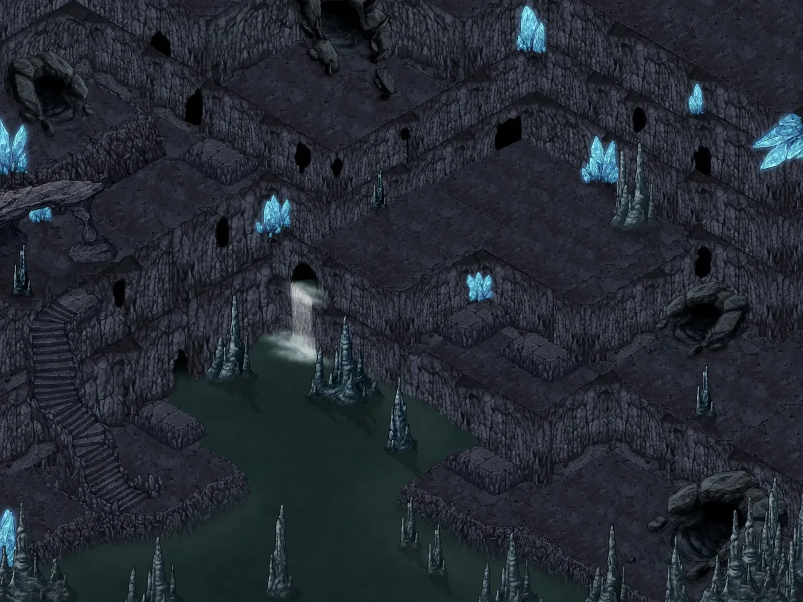
📍 하흐란 ISO 01 — 공명 수정굴

📍 뉴파티피플
마엘리스 새턴:
Warmind Wand Spend 2 charges when an ally within 30 feet who can see or hear you would drop to 0 HP but is not killed outright. Set that ally to 1 HP manually. 이 완드는 패배한 warband leader의 부서진 칼자루와 턱뼈로 만들어졌습니다. 이 완드는 7 충전을 지니며, 매일 새벽 expended 충전을 1d6 + 1 회 회복합니다. 마지막 충전을 소비했다면 1d20 을 굴립니다. 1이 나오면 완드가 마법이 빠져나가며 작은 숨소리를 내고, 비마법적인 검 hilt만 남습니다. 이 완드를 들고 있는 동안, 당신은 1개 이상의 충전을 소비해 아군에게 명령을 내리고 사기를 북돋우며 아래 속성 중 하나를 사용할 수 있습니다. Forced Endurance. 당신을 보거나 들을 수 있는 30피트 내의 ally가 outright death가 아닌 방식으로 0 히트 포인트로 감소할 때, 당신은 Reaction을 사용하고 2 충전을 소비해 그 크리처가 대신 1 Hit Point로 버티게 할 수 있습니다. 한 크리처가 이 속성의 이익을 받으면, 긴 휴식을 마칠 때까지 다시 이 속성의 이익을 받을 수 없습니다. Form Ranks. 당신은 마법 행동으로 1 충전을 소비해 동료 하나가 다른 위치로 움직이도록 지휘하고 결의를 북돋울 수 있습니다. 그렇게 할 때 당신을 보거나 들을 수 있는 ally 하나를 선택합니다. 그 ally는 2d4 + 2 Temporary 히트 포인트를 얻고, 자신의 Reaction을 사용해 기회 공격을 유발하지 않고 Speed의 절반까지 이동할 수 있습니다. Unyielding Critical. 당신을 보거나 들을 수 있는 30피트 내의 ally가 Critical Hit를 기록하면, 당신은 Reaction을 사용하고 1 충전을 소비해 그 공격의 잔혹함을 증폭할 수 있습니다. 2d4 를 굴려 그 합계를 ally의 피해 굴림에 더합니다. Warband Strike. 당신이 자신의 턴에 Attack 행동을 취할 때, 공격 중 하나를 대체하고 1 충전을 소비해 동료 하나에게 공격을 지시할 수 있습니다. 그렇게 할 때 당신을 보거나 들을 수 있는 willing 크리처 하나를 선택합니다. 그 크리처는 즉시 자신의 Reaction을 사용해 무기 또는 Unarmed Strike로 한 번 공격할 수 있습니다.
마엘리스 새턴 takes a long rest. Recovery Benign Transposition 사용 횟수 +1 Warmind Wand 사용 횟수 +2
마엘리스 새턴:
제가이걸 능력을 기억할수있겠죠
워밴드는 절대안쓸거같긴한데
나머지는잘쓸거같아서..
ㅇ(-(
희야 > 희야:
Thanks for updating the Item MacroHello, I am Forien and with Kekilla's permission I took this module over from him. My job here is mostly to keep this module maintained and working on Foundry v11 and future updates. That said I am not opposed to expanding this module with additional systems or new features if there is big demand enough.Since I took this module with next to no knowledge, keep in mind that I might not know if something is broken or not working as intended. Please feel free to contact me on Foundry Discord by pingingForien. You can also joinmy Discordor report anIssue on GitHub.I'm creating Foundry modules (full list of which you can find on myFoundry Profile) and maintaining them by spending my free time. If you would like to support me and the development of those modules, please considerbecoming a Patronor donating throughPayPalorKo-Fi
할다론 미스바르 takes a long rest and recovers 70 hit points. Recovery 임시 hp 최대치 -10 현재 hp +70 실패수 -1 1레벨 슬롯 +4 2레벨 슬롯 +1 Alchemist's Potion Belt 사용 횟수 +3 Winged Boots 사용 횟수 +1
초 > 초:
Thanks for updating the Item MacroHello, I am Forien and with Kekilla's permission I took this module over from him. My job here is mostly to keep this module maintained and working on Foundry v11 and future updates. That said I am not opposed to expanding this module with additional systems or new features if there is big demand enough.Since I took this module with next to no knowledge, keep in mind that I might not know if something is broken or not working as intended. Please feel free to contact me on Foundry Discord by pingingForien. You can also joinmy Discordor report anIssue on GitHub.I'm creating Foundry modules (full list of which you can find on myFoundry Profile) and maintaining them by spending my free time. If you would like to support me and the development of those modules, please considerbecoming a Patronor donating throughPayPalorKo-Fi
안지운 것
마엘리스 새턴:
오늘볼릭이나 니콜라스가있던가요?
초:
오늘 누구누구 가나요 궁금... .누굴로 데려갈지
있을수도있져
실버문:
확실히 어제거 이어서 하는거면 그럴지도...
초:
그리고 마스터님 혹시 오늘 늦게까지 하실 예정이 있는지 궁금합니다...
초:
못한다는 뜻은 아니고 제가 집이 아니라서 만약 넘 늦어지면 중간에 집에 가려고 그래요 ㅋㅋㅋㅋ
잠깐 빠지시고 집에가세요 늦게가면 안좋아요
지금 들어가시죵
집이 좋잖아요
아직 못 먹어서
그냥 맛있는 거!
생일은 아닌데 3만원 어치의 케이크가 지금 제 손에.
좌측에 세모로
이럴 수 있는걸 기억을 하면 좋지만~! 정면 바라보는 토큰은 이렇게 할 필요가 없죠
모니안:
오늘 어제 내용 이어서 하나요? 아니면 새로운 내용으로 가나요?
어제랑은 별도의 파티로
현재 파티가 왈든으로 가려고 저러는 동안에
동시에 벌어진다는 설정입니다
더 재밌을거같아요
그럼닐라꺼내와야겠다
무슨
리리 펀치플러프:
왈든으로 가는 길이에요 우리??
피아:
피아 takes a long rest. Recovery 임시 hp 최대치 -5 Activities Resourceful Use
닐라:
닐라 takes a long rest and recovers 52 hit points. Recovery 현재 hp +52 Wild Shape 사용 횟수 +1
잠깐 저 재부팅 좀 하고올게요
루드 > 루드:
Thanks for updating the Item MacroHello, I am Forien and with Kekilla's permission I took this module over from him. My job here is mostly to keep this module maintained and working on Foundry v11 and future updates. That said I am not opposed to expanding this module with additional systems or new features if there is big demand enough.Since I took this module with next to no knowledge, keep in mind that I might not know if something is broken or not working as intended. Please feel free to contact me on Foundry Discord by pingingForien. You can also joinmy Discordor report anIssue on GitHub.I'm creating Foundry modules (full list of which you can find on myFoundry Profile) and maintaining them by spending my free time. If you would like to support me and the development of those modules, please considerbecoming a Patronor donating throughPayPalorKo-Fi
용3 > 용3:
Thanks for updating the Item MacroHello, I am Forien and with Kekilla's permission I took this module over from him. My job here is mostly to keep this module maintained and working on Foundry v11 and future updates. That said I am not opposed to expanding this module with additional systems or new features if there is big demand enough.Since I took this module with next to no knowledge, keep in mind that I might not know if something is broken or not working as intended. Please feel free to contact me on Foundry Discord by pingingForien. You can also joinmy Discordor report anIssue on GitHub.I'm creating Foundry modules (full list of which you can find on myFoundry Profile) and maintaining them by spending my free time. If you would like to support me and the development of those modules, please considerbecoming a Patronor donating throughPayPalorKo-Fi
Gamemaster:
오늘 참여 PC를 올려주시지요
쥐짝아
엘드람:
저 엘드람 6->7레벨 특성추가 처리가 안되고 있습니다
흑흑
피아:
피아 takes a long rest. Recovery 임시 hp 최대치 -5 Activities Resourceful Use
모드:
모드 takes a long rest. Recovery 계약 슬롯 +2
리리 펀치플러프:
리리 펀치플러프 takes a long rest.
할다론 미스바르:
특성 추가 안돼서 할다론 할것 같넹ㅅ...
오셨는디
분명히 방금 파콘 와자작 이런ㅁ 말하셔ㅑㅆ음
아 오셨다
Gamemaster:
드루이드 자체의 버그인가
어제 볼릭도 그러던데
입니다..........
할다론 미스바르:
그그 그 캔트립에 지혜수정치 추가 딜 넣는겅ㅅ
Gamemaster:
오늘 할 참여면 그건 제가 나중에 추가하죠
리리 펀치플러프:
눈 비벼보니 리리의 토큰이 바뀌었군요
...정말 하플링이군요
ㅋㅋㅋㅋㅋㅋㅋㅋㅋㅋㅋㅋㅋㅋㅋㅋㅋㅋㅋ
블레스드 트르아티으
어떤거 고르셨어요
근데 드루랑 클래릭이랑
7렙 테크트리가 비슷하네
포텐트?
아니면 디바인 스트?
아마 포텐트인듯
마우스 올려야 토큰이 보일가요
엘드람 못만지겠군
제가 버그로 두번 튕김
내레이터:
그러면 여러분은 묘한 조합으로...
루크:
Mage Armor 1레벨 • 방호계 갑옷을 입고 있지 않은 자발적인 크리처를 건드립니다. 주문이 끝나기 전에 대상의 기본 AC가 13에 민첩 수정치를 더한 값이 됩니다. 대상이 갑옷을 착용하면 주문이 조기 종료됩니다.
Gamemaster:
회색 사냥개 술집에서 시작합니다
이곳은 몇몇은 여러번 와봤지요?
(네~~
요즘에는 여러분을 딱히 거부하는 느낌이 들지 않습니다
하지만 파티피플과는 다른 메뉴를 팔고 있습니다.
파티가 가진 전통 레시피와 쥐노사가 만든 몇개에 의존하는 그곳과다르게
할다론 미스바르:
음 적당히 면식 있는 정도이지 않을까요...
내레이터:
수 많은 모험가들이 오고가는 것을 보고 레시피를 단련시킨 이곳이 좀 더 뭐가 맛있다는평이 많습니다
Gamemaster:
여러분은 이렇게 모였습니다. 서로를 잘 아나요?
아 물론 세션은 처음이여도 면식은 있을겁니다 하지만
더 딥하게는!?
피아:
할다론이랑은 면식이 있지만 나머지와는 크게....
피아:
그나마 루크랑 이런저런 정보교환을 했습니다
리리 펀치플러프:
다른 사람은 오가면서 본 정도이고, 같은 소형 친구인 모드랑도 좀 친해요
모드:
모드는 리리 몇번 정도 본 적있고... 할다론도 마찬가지고... 아니 정말 친한사람이없군요 너 왜 친구없니
친해요?! 다행이다
내레이터:
좋아요 그러면 잠깐 술집 rp라는걸 10분만 해보죠
닐라:
닐라는 친해요? 하면 네! 하겠지만 사실친하지않은사이겠군요
리리 펀치플러프:
(일단 리리가 모드를 좋아해요
리리 펀치플러프:
"제가 여기서 이렇게 맛있게 먹는다는 건 피티 씨에겐 비밀이에요..." (냠냠)
(맛있게 먹으면서 모드에게 음식을 덜어줍니다... 둘 다 팔이 짧지만)
모드:
"저도... 비밀이에요! 파티 씨네도 좋지만... 여기도 정말 맛있네요, 앗 감사합니다-" (냠냠냠)
피아:
"파티 씨도 이런 음식들을 많이 팔면 손님이 좀 모일까요? 처음 보는 음식들이 많네요..."
할다론 미스바르:
"...(왁자지껄한 소리만 들어도 기빨려서 말없이 술만 마시고 있음)"
리리 펀치플러프:
"파티 씨가... 이런 요리를 할 수 있을까요?"
피아:
"음... 배우면 할수 있지 않을까요...?"
"아마....?"
닐라:
"저 사실 술집은 처음와봐요! 카이엔에갔을때 술집을 가려고했는데 드로우가 어쩌고 하고 쫓겨났다가 여기와서는 바로 일에 휘말리고 그런거 있죠? 언젠가는 꼭 와봐야지 했는데 이런곳이구나"
내레이터:
회색개 술집은 왁자지껄합니다. 사실 계류관 모험가들이 올만한 곳이 거의 이곳이라
리리 펀치플러프:
"술집이 처음이라니! 얼른 이것도 먹어요!" (닐라도 챙겨줍니다)
내레이터:
그 유동인구라 해야할까요? 그게 파티피플과는 차원이 다릅니다
모드:
사람 많아서 먹느라 사람 구경하느라 바쁨
닐라:
"술집이면 그런거 있을까요? 그.. 두근두근 어이 너희 여기가 어디라고 들어와 엉?! 이런거요!"
내레이터:
그런데 그 때 갑자기 뭔가 쩅그랑 하는 소리가 들리더니 주위에서 "오오.." 하는 소리가 들립니다
피아:
"진짜로 그런 일이...?" 쨍그랑 소리가 난 쪽을 봅니다
"뭐에요?"
(누구보다 빠르게 구경하러감)
옆자리에서 누군가가 픽 하고 쓰러진게 보입니다.. 옆에있는 사람들은..
Gamemaster:
"어이 지금 뭐하는거야?"
"이 녀석 술에 그렇게까지 취했나!?"
라는 소리를 하는군요
Gamemaster:
누군가가 술취해서 바닥에 자빠진 것 같습니다
"괜찮으신가요?" 다가가봅니다
모드:
사람들 옆에 껴서 쓰러진 사람이 괜찮은지 살피고요
닐라:
"우아악 사람이 쓰러졌다!! 괜찮아요? 다쳤어요?"
Gamemaster:
좋습니다 그러면 그 사람을 살펴봅니다. 옆에서 같이 술을 마시던 일행.. 한 남성은 여러분을 보며 이렇게 말합니다
"아 별일 아닐거요. 술먹다가 쓰러질 수도 있지!"
라며 여러분에게 대수롭지 않다는 듯 말합니다"
어떻게 대응하시나요
피아:
그래도 혹시 모르니까 상태를 좀 살펴볼수 있나요?
리리 펀치플러프:
쓰러진 사람이 의식이 있는지 알 수 있을까요?
내레이터:
좋습니다 그러면 이것은 의료! (의선생님이 안계신다!)
닐라:
Guidance 예지계 자발적인 크리처를 건드리고 기술 하나를 선택합니다. 주문이 끝나기 전에 크리처는 선택한 기술을 사용하는 능력 판정에 1d4를 더합니다.
내레이터:
그러면... 그 모습은 입에 거품 같은것을 물고있고 목구멍에서
묘한 꽃줄기같은게 올라와있습니다
내레이터:
그리고 닐라는........ 자연학!
리리 펀치플러프:
"..대체 무슨 술을 마시면...?"
닐라:
Guidance 예지계 자발적인 크리처를 건드리고 기술 하나를 선택합니다. 주문이 끝나기 전에 크리처는 선택한 기술을 사용하는 능력 판정에 1d4를 더합니다.
할다론 미스바르:
"(술잔을 내려놓음) ...지금도 성장하고 있는 것 같은데 이 꽃..."
(목구멍에서 나온 꽃과..오...
내레이터:
그러면... 그에게서 당신과 아주 흡사한 힘이 느껴집니다. 보존 그 이상의 힘이 그러면.. 그가 쓰러진 바닥 아래에서 묘하지만 꽃 줄기 같은 것이 자란게 보입니다.
피아:
(뽑으면 되나? 하는 표정으로 목구멍 살펴봄
닐라:
"으응...? 이건.... 우리회합의..?"
할다론 미스바르:
"...(본인이 마시던 술잔을 봄)"
리리 펀치플러프:
(뭐가 딸려나오면 어떡해요!!
내레이터:
그러면 그 꽃이 꿈툴거립니다. 아주 미세하지만 그것은 실시간으로 자라고 있습니다
닐라:
Ring of Plant Speech While wearing the ring, communicate with plant creatures within 30 feet as if sharing a language. Nonsentient plants within 30 feet gain sentience, communicate telepathically with you, and can answer questions about events witnessed within the last day. 이 반지를 착용하는 동안, 당신은 30피트 안의 식물과 식물 크리처와 공통 언어를 공유하는 것처럼 Speak with Plants 할 수 있습니다. 당신으로부터 30피트 안의 지성이 없는 식물은 지성을 얻고 당신과 텔레파시로 의사소통할 수 있습니다. 당신은 그들에게 지난 하루 동안 목격한 사건에 대해 질문할 수 있으며, 지나간 크리처, 날씨, 근처에서 일어난 다른 일들에 관해 식물의 제한된 관점에서 정보를 얻습니다. 이 반지는 Henwin의 추종자들이 귀하게 여깁니다.
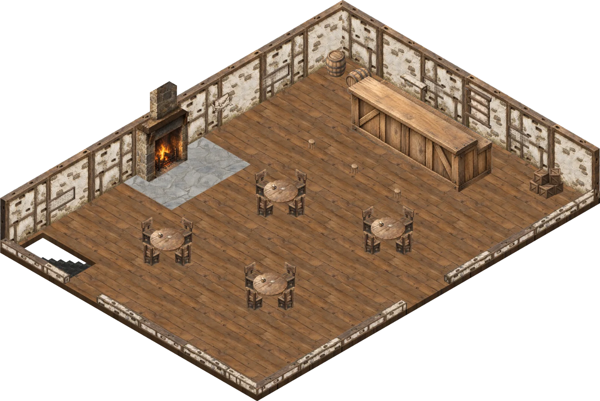
📍 ISO — 회색개 술집
그렇게 하려고 하는데 갑자기
주변에서 누군가가 한명 더 쓰러집니다
닐라:
"안녕? 나는 달오름숲의 닐라인...?"
내레이터:
방금 같이 술마시고 있던 사람으로 보입니다
그러더니 주변에서 한명씩 픽픽픽 쓰러지는군요
(자기도 모르게 입을 턱 막습니다)
Gamemaster:
갑자기 사람들이 이상한 느낌으로 꿈툴거리더니
기괴하게 일어나기 시작합니다
닐라:
(혹시 이거 기생식물... 뭐 그런건가요?)
리리 펀치플러프:
(자극하지 않기 위해 조심조심 물러서며 자리를 잡습니다)
내레이터:
좋습니다... 닐라는 대화를 걸어보는군요 하지만
상대는 아주 공격할 의사가 만만인거같습니다
Gamemaster:
하지만 닐라가 보자마자 느낀 것이 하나 있다면
그 안에서 느껴지는 넘실거리는 페이 마법의 잔재. 그리고 과잉된 생명
보존 그 이상의 힘이 들어가있습니다
마치 지면에 식물 영양제를
닐라:
"안녕? 나는 달오름숲의 닐라인데 너희는 누구야? 왜 갑자기 인간의 몸에 뿌리내렸는지 알 수 있을까...?"
Gamemaster:
익사할 정도로 뿌린 것 같은 느낌이 듭니다
📍 [삭제 대상] 점령된 왈든 — 공명 펌프장
피아:
"....일단 좋게 끝을 보긴 힘들거 같군요."
@검을 꺼냅니다
리리 펀치플러프:
"그럼... 일단은 제압해야겠네요?"
닐라:
"그렇지만 이 식물들... 정상적으로 자나게 아니에요.. 페이의 힘으로 과성장된.."
⚔️ 전투 시작 — 회색개 술집
할다론 미스바르, 리리 펀치플러프, 모드, 루크, 닐라, 피아, 다그닥 씨, The Rooted, The Rooted, Harvest Wicker
Tandem Footwork 특성 우선권을 굴릴 때, 행동불능 상태가 아니라면 바드의 영감 사용 횟수 하나를 소모할 수 있습니다. 그렇게 할 때, 바드의 영감 주사위를 굴립니다. 당신과 당신을 보거나 들을 수 있는 30피트 이내의 동료들 각각은 굴린 수치만큼 우선권에 보너스를 얻습니다. 특수 1시간 자신 Emanation No Template
이거 쓰겠습니다
다같이 증가인가요
할다론 미스바르:
"이걸...식물만 제거해야 하는 건가?"
사람이긴한데
Gamemaster:
목구멍이 몸에 식물이 칭칭 감겨있느네
그런 느낌입니다
닐라:
"이런... 이런 건 잘못된 거에요 식물들에게도 좋지 않아요...!"
할다론 미스바르:
"지금은 그렇게 해야 사람들을 구할 수 있다"
모드:
Blight 4레벨 • 사령계 범위 내에 보이는 크리처는 건강 내성 굴림을 하여 실패 시 8d8 부식 피해를 받고, 성공 시 절반의 피해를 받습니다. 식물 크리처는 자동으로 내성에 실패합니다. 대안으로, 나무나 덤불 같이 크리처가 아닌 비마법적 식물을 대상으로 할 수 있습니다. 내성 굴림 없이 단순히 시들어 죽습니다. 고레벨 주문 슬롯 사용 시. 4레벨 초과 주문 슬롯을 사용할 때마다 피해가 1d8씩 증가합니다.
모드:
식물을 향해서만 조준하는 느낌으로 쏩니다.
루크:
Flame Blade 2레벨 • 방출계 빈 손에 불타는 검을 불러냅니다. 검은 크기와 형태가 시미터와 비슷하며 지속 시간 동안 유지됩니다. 검을 놓으면 사라지지만, 추가 행동으로 다시 불러낼 수 있습니다. 마법 행동으로 불타는 검으로 근접 주문 공격을 할 수 있습니다. 명중하면 대상은 3d6에 주문 시전 능력치 수정치를 더한 화염 피해를 받습니다. 불타는 검은 반경 10피트 밝은 빛과 추가 10피트 희미한 빛을 발합니다. 고레벨 주문 슬롯 사용 시. 2레벨 초과 주문 슬롯을 사용할 때마다 피해가 1d6씩 증가합니다.
"일단 식물들부터 잘라내야겠어요"
방금 모드로부터 날아갔겠군요 ㅋㅋㅋ
루크:
Flame Blade Evoke Flame Blade 빈 손에 불타는 검을 불러냅니다. 검은 크기와 형태가 시미터와 비슷하며 지속 시간 동안 유지됩니다. 검을 놓으면 사라지지만, 추가 행동으로 다시 불러낼 수 있습니다. 마법 행동으로 불타는 검으로 근접 주문 공격을 할 수 있습니다. 명중하면 대상은 3d6에 주문 시전 능력치 수정치를 더한 화염 피해를 받습니다. 불타는 검은 반경 10피트 밝은 빛과 추가 10피트 희미한 빛을 발합니다. 고레벨 주문 슬롯 사용 시. 2레벨 초과 주문 슬롯을 사용할 때마다 피해가 1d6씩 증가합니다.
리리 펀치플러프:
(아이구 저런... 하는 표정으로 보기
루크:
Flame Blade Flame Blade Scimitar 빈 손에 불타는 검을 불러냅니다. 검은 크기와 형태가 시미터와 비슷하며 지속 시간 동안 유지됩니다. 검을 놓으면 사라지지만, 추가 행동으로 다시 불러낼 수 있습니다. 마법 행동으로 불타는 검으로 근접 주문 공격을 할 수 있습니다. 명중하면 대상은 3d6에 주문 시전 능력치 수정치를 더한 화염 피해를 받습니다. 불타는 검은 반경 10피트 밝은 빛과 추가 10피트 희미한 빛을 발합니다. 고레벨 주문 슬롯 사용 시. 2레벨 초과 주문 슬롯을 사용할 때마다 피해가 1d6씩 증가합니다.
Gamemaster:
(그 어딘가에 투명피아있음
닐라:
(드루이드앞에서 식물죽어 역병마법쓰기...)
내레이터:
화염 검에 덩쿨들이 화르륵 타오르기 시작합니다
리리 펀치플러프:
Flame Blade 4레벨 • 방출계 You evoke a fiery blade in your free hand. The blade is similar in size and shape to a scimitar, and it lasts for the duration. If you let go of the blade, it disappears, but you can evoke it again as a Bonus Action. As a Magic action, you can make a melee spell attack with the fiery blade. On a hit, the target takes Fire damage equal to 3d6 plus your spellcasting ability modifier. The flaming blade sheds Bright Light in a 10-foot radius and Dim Light for an additional 10 feet. Using a Higher-Level Spell Slot. The damage increases by 1d6 for each spell slot level above 2.
내레이터:
아무래도 뭔가의 이유가 있나보군요1!!
리리 펀치플러프:
Salamander Flame Gauntlets Only if blade cast using DEX: spell attack 30 feet, 4d6 fire. Reforms after attack regardless of hit. 이 dark metal gauntlets는 salamander의 심장에서 나온 화염으로 forge되었습니다. 착용한 동안, 당신의 손으로 하는 unarmed strike는 명중한 대상에게 추가 1d4 화염 피해를 줍니다. 추가로, 추가 행동을 사용해 gauntlets에서 Flame Blade 주문(4th-레벨 version, 집중 불필요)을 시전할 수 있습니다. 이때 주문의 주문시전 능력으로 당신의 주문시전 능력, 또는 근력나 민첩 중 당신이 선택한 것을 사용할 수 있습니다. fiery blade를 들고 있는 동안, 대신 행동을 사용해 그것으로 ranged 주문 공격을 할 수 있습니다. 그렇게 하면 blade는 사거리 30 피트의 fiery spear가 됩니다. 명중하면 spear는 4d6 화염 피해를 줍니다. 공격 직후 fiery blade는 당신의 손에 다시 형성됩니다.
Cauldron of Plentiful Resources > Gamemaster:
Salamander Flame GauntletsAutomation is out of date!Update Item
리리 펀치플러프:
Flame Blade 4레벨 • 방출계 You evoke a fiery blade in your free hand. The blade is similar in size and shape to a scimitar, and it lasts for the duration. If you let go of the blade, it disappears, but you can evoke it again as a Bonus Action. As a Magic action, you can make a melee spell attack with the fiery blade. On a hit, the target takes Fire damage equal to 3d6 plus your spellcasting ability modifier. The flaming blade sheds Bright Light in a 10-foot radius and Dim Light for an additional 10 feet. Using a Higher-Level Spell Slot. The damage increases by 1d6 for each spell slot level above 2.
화염공격이
마구 튀어나오네요
The Rooted:
그러면 이 존재는 그 뿌리들이 뒤엉켜서
마치 거대한 존재 처럼 바뀌었습니다
The Rooted:
Thorn Whip 특성 +7, 도달 15ft. 적중 11(2d6+4) 관통. 중형 이하는 붙잡혀 포박되고 5ft 끌려온다(탈출 DC 15).
(사실... 정체가...
Gamemaster:
그러면 가시 채찍이 촤르륵 튀어나오더니
할다론을 붙잡습니다
The Rooted:
Thorn Whip 특성 +7, 도달 15ft. 적중 11(2d6+4) 관통. 중형 이하는 붙잡혀 포박되고 5ft 끌려온다(탈출 DC 15).
그리고
The Rooted:
주변에 엄청난 덩쿨이 튀어나오빈다
피아:
@몸에 달라붙은 덩쿨의 힘을 팔힘으로 버텨내자 뚜두둑 하고 떨어집니다
리리 펀치플러프:
"닐라 씨 그냥 눈을 감아요...!"
리리 펀치플러프:
(신중하게 거리를 재는 모습
닐라:
Beacon of Hope 3레벨 • 방호계 범위 내의 원하는 수의 크리처를 선택합니다. 지속 시간 동안 각 대상은 지혜 내성 굴림과 사망 내성 굴림에 유리를 지니며, 어떤 치유로든 가능한 최대 HP를 회복합니다.
(잘못시전됐는데요 왜저렇게됏지?
Gamemaster:
어떤걸 했는데 어떻게되었는데요?
닐라:
(??? 맞게했는데도 자꾸 이상하게되네요 잠시만요
(왼쪽위에생기네요?
(됏다~
Gamemaster:
(뭔가 컨트롤법이 있나보군요
리리 펀치플러프:
(다들 꽃에 불지르고 있는데 꽃밭을 만드는 드루이드 감동적...
닐라
Preserved Land — 닐라 임시 HP
할다론 미스바르:
행동 써서 구속을 벗어나겠습니다 곡예굴림이엇던가요
Harvest Wicker:
Scare 특성 30ft, 지혜 DC 13 , 1분 공포(원본 유지). Action 즉시 30ft 1 creatures
Chaff Burst 특성 30ft 원뿔, 민첩 DC 13 실패 14(4d6) 참격 + 다음 턴 끝까지 장님, 성공 절반.
Gamemaster:
그러면 꽃가루 같은게 날아오더니
닐라:
Improved Preservation 실패 시 다음 자기 턴 종료까지 속도 절반. 보존된 땅이 다음과 같이 더욱 강력해집니다. 수호자 보강. 보존된 땅이 만든 입방체 안에 있는 동안,
당신과 동료들은 건강 내성 굴림에 지혜 수정치(최소 +1)만큼 보너스를
받습니다. 모독자 배격. 보존된 땅이 만든 입방체가 적의 공간에
들어갈 때마다, 그리고 적이 입방체에 들어가거나 그 안에서 턴을 마칠
때마다, 그 적은 당신의 주문 내성 DC를 목표로 지혜 내성 굴림을 굴립니다. 실패하면 그 적은 2d10 광휘 피해를 입고, 새로 돋아난 초목이 발목을 붙들어
다음 자기 턴이 끝날 때까지 속도가 절반이 됩니다. 성공하면 절반의 피해만
입습니다. 적은 이 내성 굴림을 턴당 한 번만 굴립니다.
Gamemaster:
갑자기 몸이 치유되기 시작합니다
할다론 미스바르:
구속상태니까 이것도 불리로 굴리나요?
내레이터:
그런데 그 치유가 너무 과해서 오히려 살이 부풀어서 괴사해버립니다
할다론 미스바르:
오늘 주사위가 안좋네요 ㅋㅋㅠ
Harvest Wicker:
(전원 성공 ㄷㄷ)
피아:
@꽃가루가 날아오자 검을 휙! 휘둘러 검풍으로 밀어냅니다
할다론 미스바르:
Alchemist's Potion Belt Drink one belt potion (2d4 + 2, Bonus Action) or administer it to an adjacent creature by targeting them — with no target the healing applies to you automatically. The belt refills to 3 potions at dawn. Bottle shattering on a Dexterity save natural 1 or incoming critical hit is manual. 어떤 병 입구에도 맞게 마법적으로 크기가 변하는 마개가 달린 벨트다. 허리에 두르거나 탄띠처럼 어깨에 멜 수 있다. 빈 자리에서는 옅은 약 냄새가 계속 올라온다. 매일 새벽, 벨트의 빈 자리에 치유 물약(Potion of Healing) 3병이 저절로 채워진다. 이렇게 생긴 물약은 다음 새벽이 되면 사라지므로 쟁여 둘 수 없다. 벨트에는 물약을 최대 3병 까지 물려 둘 수 있으며, 병을 물리는 데는 물체 상호작용 1회 가 필요하다. 벨트에 물려 둔 물약은 마개가 저절로 열리며 손에 튀어나오므로, 인접한 다른 크리처에게 먹이는 것도 보너스 행동 으로 할 수 있다. 민첩 내성 굴림에서 1 이 나오거나 치명타 를 맞았을 때 d20을 굴려, 1이 나오면 벨트에 물린 병 하나가 깨져 파괴된다.
닐라:
"으아아아... 그만두세요 우리 말로해요...."
(엉엉이라고함)
할다론 미스바르:
(호프 오브 비컨이면 이 회복도 최대치로 적용되는게 맞을깔요?
동일합니다
+9..!
할다론 미스바르:
"...(좀 전에 술을 괜히 마셨나 생각중)"
Gamemaster:
(힐링 모션이 진심 ㅋㅋ
내레이터:
그러면 나머지 분량은 수동으로 넣으시길!
닐라
Preserved Land — 할다론 미스바르 임시 HP
(마스터님이 벨트를 넣어줬구나
침묵의 처형인 Basic weapon attack using this item's native weapon damage, mastery, and passive effects. 두 동강 난 처형인의 대검을 조각째 되불에 넣어 벼려 낸 양손검. 같은 종류의 무기보다 터무니없이 무겁고 다루기 사납습니다. 근력 18 이상 인 크리처만 불리점 없이 휘두를 수 있습니다. 이 무기로 하는 공격 및 피해 굴림에 +2 보너스 를 받습니다. 고문자의 형상. 긴 휴식마다 한 번, 보너스 행동으로 칼날 속에 갇힌 참상을 끌어내 고문자의 얼굴을 뒤집어쓸 수 있습니다. 1시간 동안 근력 수치가 2 증가 하며 매력(위협) 판정에 이점 을 얻습니다. 또한 그동안 히트 포인트가 15 이하인 크리처를 근접 공격으로 명중시키면 그 크리처는 즉시 죽습니다 . 저주. 매일 밤, 소리 없이 우뚝 선 형체가 당신의 생기를 빨아 가는 꿈을 꿉니다. 그때마다 DC 15 지혜 내성 굴림 을 굴려, 실패하면 새벽에 2d8 정신 피해를 입습니다. 이 피해는 어떤 수단으로도 줄일 수 없습니다.
Savage Attacker 특성 특히 큰 피해를 주는 공격을 훈련했습니다. 무기로 대상을 명중시킬 때 턴당 한 번, 무기의 피해 주사위를 두 번 굴려 둘 중 하나를 선택하여 대상에게 적용할 수 있습니다.
Divine Smite 1레벨 • 방출계
침묵의 처형인 Basic weapon attack using this item's native weapon damage, mastery, and passive effects. 두 동강 난 처형인의 대검을 조각째 되불에 넣어 벼려 낸 양손검. 같은 종류의 무기보다 터무니없이 무겁고 다루기 사납습니다. 근력 18 이상 인 크리처만 불리점 없이 휘두를 수 있습니다. 이 무기로 하는 공격 및 피해 굴림에 +2 보너스 를 받습니다. 고문자의 형상. 긴 휴식마다 한 번, 보너스 행동으로 칼날 속에 갇힌 참상을 끌어내 고문자의 얼굴을 뒤집어쓸 수 있습니다. 1시간 동안 근력 수치가 2 증가 하며 매력(위협) 판정에 이점 을 얻습니다. 또한 그동안 히트 포인트가 15 이하인 크리처를 근접 공격으로 명중시키면 그 크리처는 즉시 죽습니다 . 저주. 매일 밤, 소리 없이 우뚝 선 형체가 당신의 생기를 빨아 가는 꿈을 꿉니다. 그때마다 DC 15 지혜 내성 굴림 을 굴려, 실패하면 새벽에 2d8 정신 피해를 입습니다. 이 피해는 어떤 수단으로도 줄일 수 없습니다.
피아 > Gamemaster:
RecoverySavage Attacker 사용 횟수+1
모드:
Eldritch Blast, Agonizing, Repelling 광선 한 발: 원거리 주문 공격. 적중 시 1d10 + 매력 수정치 역장 피해. 모드(7레벨)는 이 활동을 두 번 사용합니다. Repelling Blast 적중 시 최대 10피트 밀칩니다. 번쩍이는 에너지의 광선이 사정거리 내의 크리쳐를 향해 날아갑니다. 목표에 대해 원거리 주문 공격을 합니다. 명중하면, 목표는 1d10 힘 피해를 받습니다. 이 주문은 더 높은 레벨에 도달하면 더 많은 광선을 만듭니다: 5레벨에서 두 개의 광선, 11레벨에서 세 개의 광선, 17레벨에서 네 개의 광선. 당신은 광선들을 같은 목표나 서로 다른 목표들에게 향하게 할 수 있습니다. 각 광선에 대해 별도의 공격 굴림을 합니다.
(1d4+7)
Gamemaster:
한번 더 공격할 수 있지만요
모드:
Eldritch Blast, Agonizing, Repelling 광선 한 발: 원거리 주문 공격. 적중 시 1d10 + 매력 수정치 역장 피해. 모드(7레벨)는 이 활동을 두 번 사용합니다. Repelling Blast 적중 시 최대 10피트 밀칩니다. 번쩍이는 에너지의 광선이 사정거리 내의 크리쳐를 향해 날아갑니다. 목표에 대해 원거리 주문 공격을 합니다. 명중하면, 목표는 1d10 힘 피해를 받습니다. 이 주문은 더 높은 레벨에 도달하면 더 많은 광선을 만듭니다: 5레벨에서 두 개의 광선, 11레벨에서 세 개의 광선, 17레벨에서 네 개의 광선. 당신은 광선들을 같은 목표나 서로 다른 목표들에게 향하게 할 수 있습니다. 각 광선에 대해 별도의 공격 굴림을 합니다.
(수동으로 넣었습니다
루크:
Flame Blade Flame Blade Scimitar 빈 손에 불타는 검을 불러냅니다. 검은 크기와 형태가 시미터와 비슷하며 지속 시간 동안 유지됩니다. 검을 놓으면 사라지지만, 추가 행동으로 다시 불러낼 수 있습니다. 마법 행동으로 불타는 검으로 근접 주문 공격을 할 수 있습니다. 명중하면 대상은 3d6에 주문 시전 능력치 수정치를 더한 화염 피해를 받습니다. 불타는 검은 반경 10피트 밝은 빛과 추가 10피트 희미한 빛을 발합니다. 고레벨 주문 슬롯 사용 시. 2레벨 초과 주문 슬롯을 사용할 때마다 피해가 1d6씩 증가합니다.
Gamemaster:
그러면 몸이 갑자기 치유의 힘으로 부풀더니
Gamemaster:
쓰러진 녀석이 다시 일어납니다
(식물 측 스파이 으심중
리리 펀치플러프:
Flame Blade 4레벨 • 방출계 You evoke a fiery blade in your free hand. The blade is similar in size and shape to a scimitar, and it lasts for the duration. If you let go of the blade, it disappears, but you can evoke it again as a Bonus Action. As a Magic action, you can make a melee spell attack with the fiery blade. On a hit, the target takes Fire damage equal to 3d6 plus your spellcasting ability modifier. The flaming blade sheds Bright Light in a 10-foot radius and Dim Light for an additional 10 feet. Using a Higher-Level Spell Slot. The damage increases by 1d6 for each spell slot level above 2.
루크:
"식물이라기 보다 언데드 같은 걸 상대하는 기분이네요"
리리 펀치플러프:
Healing Word 1레벨 • 방호계 범위 내에 보이는 당신이 선택하는 크리처가 2d4에 주문 시전 능력치 수정치를 더한 만큼 HP를 회복합니다. 고레벨 주문 슬롯 사용 시. 1레벨 초과 주문 슬롯을 사용할 때마다 치유량이 2d4씩 증가합니다.
Gamemaster:
맥스 회복은 체크해서 넣어주세요
여러분도 맞회복합니다
내레이터:
그러면 계속해서 자라납니다. 그야말로 과잉이군요 거기에는어떤 의지도 없는 것 처럼 느껴집니다
이상하군요 이렇게까지 답이 없을 줄이야!
닐라:
Thorn Whip 변환계 당신의 명령에 따라 범위 내의 크리처를 향해 내리치는 가시 덮인 덩굴 채찍을 만듭니다. 대상에게 근접 주문 공격 굴림을 합니다. 명중하면 대상은 1d6 관통 피해를 받으며, Large 이하이면 당신 쪽으로 최대 10피트 당길 수 있습니다. Cantrip Upgrade. 피해는 5레벨(2d6), 11레벨(3d6), 17레벨(4d6)에 도달할 때마다 1d6씩 증가합니다.
(어어엉)
Harvest Wicker:
바닥에 철퍽 쓰러집니다. 누군가는 불에 타오르고 있고
내레이터:
누군가는 쓰러져 있습니다. 그런데..
@쿡쿡 찔러봄
내레이터:
모든 개체가 그대로 꿈툴거리고 있습니다
할다론 미스바르:
이전에 트리빌리혼이 만들어냈던 침해의 괴물과 비슷한 성질인지 확인해볼 수 있을까요?
⚔️ 전투 종료 — 회색개 술집2라운드 · 22분
최다 피해: 루크 (101)
| 이름 | 진영 | 준 피해 | 받은 피해 | 회복 | 20/1 |
|---|
| 루크 | 아군 | 101 | 0 | | ★1 |
| 모드 | 아군 | 40 | 0 | | |
| 피아 | 아군 | 39 | 2 | 10 | ★1 |
| 리리 펀치플러프 | 아군 | 18 | 0 | | |
| 닐라 | 아군 | 1 | 5 | 8 | ★1 |
| 할다론 미스바르 | 아군 | 0 | 28 | 31 | |
| 다그닥 씨 | 아군 | 0 | 0 | | |
| Harvest Wicker ✕ | 적 | 34 | 61 | 1 | |
| The Rooted ✕ | 적 | 23 | 80 | | ★1 |
| The Rooted ✕ | 적 | 0 | 80 | | |
쓰러짐: The Rooted, The Rooted, Harvest Wicker
- 1라운드: 피해 216 · 쓰러짐 The Rooted
- 2라운드: 피해 40 · 쓰러짐 Harvest Wicker, The Rooted
닐라:
"이, 이대로라면 다시 회복할거에요..."
내레이터:
닐라는 자연학.. 굴려볼 수 있겠군요
루크:
"이런 걸 자연스러운 식물이라고 볼 수가 있으려나..."
Gamemaster:
모드는 '마법학' 비전학
닐라:
Guidance 예지계 자발적인 크리처를 건드리고 기술 하나를 선택합니다. 주문이 끝나기 전에 크리처는 선택한 기술을 사용하는 능력 판정에 1d4를 더합니다.
모드:
(닐라도 못알아내면 저는 명예점 리롤 한번 하겠스빈다
Gamemaster > 하다:
그 몸에서 자라난 뿌리가 계속해서 생명을 공급하고 있습니다. 안되긴 했지만 저것을 지속해서 칼질하고 잘라내주지 않으면 방금 처럼 될 것입니다
Gamemaster:
모드는 다른 관점의 답을 얻겠지요!
Gamemaster:
오 좋아요 할다론 당신은 그러면
지혜 굴림
닐라:
(눈물 슥슥 닦으면서 뿌리를 가리킵니다) "저걸.. 저걸 잘라야 회복이 멈출거에요.."
@하고 잘라냅니다
루드:
(아까워라... 왈든에 가져와서 심지)
모드:
Magical Cunning 특성 1분 동안 비의적 의식을 수행할 수 있습니다. 끝날 때 소모된 계약 마법 주문 슬롯을 최대 절반(올림)까지 회복합니다. 이 특성을 사용하면 긴 휴식을 마칠 때까지 다시 사용할 수 없습니다.
할다론은 아주 흡사하다고 느낍니다. 하지만 다릅니다. 트리빌리온이 한 것 같다는 생각이 들지 않는군요
그게 무엇이든 어떠한 해그의 작품이라는 느낌이 듭니다
하지만 할다론은 직감적으로 아주 안좋게 느낍니다.
할다론 미스바르:
"...페이마법의 느낌이 들어서 설마 싶었는데 이번에도 해그가 관련된것 같군"
내레이터:
그들을 살펴보면... 살아있습니다. 불에 타도 그 순간일 뿐이지 금방 꿈툴거립니다
리리 펀치플러프:
"...대화는 여전히 어려울까요?"
닐라:
(고개를 젓습니다) "의지가 느껴지지 않아요.."
닐라:
"뿌리가 끊겨야 움직임을 멈출거에요.."
내레이터:
하지만 이 뿌리들은 어딘가에서 끊임없이 힘을 공급받는지 피아가 자르면 그 때 뿐입니다.
아마 서너지간정도 지나면 다시 자라있을 것입니다
피아:
"...아무래도 이 힘의 근원지를 찾아야겠군요."
내레이터:
그러면... 그 떄 바깥에도 이상한 소리가 들립니다
피아:
"마법적인 추적이 가능하신 분이 계신가요?"
리리 펀치플러프:
"누가 사람들에게 이런 짓을 했을까요?"
Detect Magic 1레벨 • 예지계 지속 시간 동안 자신에게서 30피트 이내에 있는 마법 효과의 존재를 감지합니다. 그런 효과를 감지하면, 마법 행동을 취해 그 마법을 지닌 영역 내의 보이는 크리처나 물체 주위의 희미한 오라를 볼 수 있으며, 효과가 주문으로 만들어진 것이라면 해당 주문의 마법 계열을 알 수 있습니다. 이 주문은 1피트의 돌, 흙, 또는 나무; 1인치의 금속; 또는 얇은 납판에 의해 차단됩니다.
내레이터:
그러면 방호계 주문이 끊임없이 느껴집니다
Gamemaster:
하지만 그것으로 근원을 추적하기에는 무리 같습니다
근원이 있다는 사실은 알거같습니다
닐라:
(주문이라면... 디스펠매직으로 끊어버릴 수 있을까요?)
리리 펀치플러프:
"다른 생존자들이라도 수색해봐야 할까요?"
내레이터:
좋습니다... 하지만 당신의 판단으로는
루크:
"근처긴 하지만 힘이 너무 강해서 오히려 방향이 잘 안 읽어지는 느낌이랄까"
내레이터:
그렇게 억누를 수 있는건 고작 한시간 정도일겁니다
닐라:
"마법이라면... 아주 잠깐이지만 끊어버릴 수 있을 거에요.."
"오래 유지되진 않겠지만...."
할다론 미스바르:
"바깥에도 이상한 소리가 들리는걸 보니 이미 어느정도 퍼진 것 같군"
루크:
"확실하게 하려면 이 마법의 근원에 도달한 뒤 거기서 마법을 해제해야겠죠."
닐라:
"그 사이에 이런 잔혹한 짓을 한 존재를 찾아야해요 식물들이 이렇게 의지도 없이 고통받는 것은 절대로 두고볼 수 없어요"
피아:
"....바깥에서도 이상한 소리들이 계속 들려요."
피아:
"여기는 뿌리를 자르는 걸로 마무리하고, 서둘러 근원을 찾는게 좋겠군요."
@하고 일단 보이는 뿌리들을 다 자릅니다
할다론 미스바르:
"...그렇다면 내가 멀쩡한게 설명이 안되는데(술잔 봄)"
리리 펀치플러프:
"좋아요. 주변을 수색해봐야겠네요!"
모드:
"병처럼 퍼지는 건 아니겠죠..." 하고 걱정스럽게 바라보고요
몇몇 사람들이 덜덜덜 실려가는게 보입니다. 그리고 온몸에 꽃이 난도질 되서 죽은 시체도 끌려가는게 보이는군요
이 정도 소동이라면 계류관의 귀에도 들어갔을 것입니다
리리 펀치플러프:
"술에 무언가를 탄 거 같은데..."
(계류관 매니저 나오라고 해
피아:
"....일단 계류관 쪽으로 가서 정보를 모아야할까요."
Gamemaster:
여러분이 만약 술잔을 조사해본다면
Gamemaster:
네 좋아요 술 자체를 조사해보면... 그냥 일반적인 술입니다 어떤 마법적인 혹은 독도 느껴지지 않습니다
Harvest Wicker:
할다론이 먹은 것도 비슷합니다
닐라:
(닐라는... 혀를 내밀어서 슬쩍 맛도 봅니다.)
다그닥 씨:
(푸르릉 거리면서 풀을 헤집는 중
루크:
"음식에 문제가 있었다면 우리도 같은 처지였을 거에요..."
"우리에겐 해당하지 않지만 다른 사람들에겐 해당하는 것이라..."
닐라:
"그럼 대체 우리만 멀쩡한 이유가.."
피아:
"저희는 그래도 일반인분들보다는 강하니까... 침투를 못한걸수도 있겠군요."
내레이터:
자 그러면... 바깥에서는 그러면 소동이 난 것을 알 수 있습니다
이런 사람들이 몇명 더 있던 것 같군요
모드:
"아니면 나중에 갑자기 발병하는 종류라던가..."
리리 펀치플러프:
"아니면 계류관 음식을 많이 먹은 사람에게만 쌓일 정도의 양이라든가... 모르겠네요."
피아:
"...어찌됐던, 저희끼리만의 조사로는 힘이 부치는군요."
내레이터:
실려오는 사람들은 형체를 알 수 없을 정도로
살이 부풀어오르고 있습니다
할다론 미스바르:
"이 정도 규모면 계류관도 알아챘을테니 그쪽으로 찾아가보지"
내레이터:
그나마 여러분이 상대한 이들은 그 사람이 누군지 알 수 있을 정도 수준이군요
Gamemaster:
(아 근데 이 회색개 술집의 전원이 저렇게 된건 아닙니다
피아:
"....일단 계류관으로 가서 상황을 들어보죠."
Gamemaster:
(몇몇 사람들이 저렇게된거지
리리 펀치플러프:
"다른 사람들 증언도 들어보죠..."
피아:
@파티에게 줬던 샌딩스톤으로 물어보면 파티피플 사람들은 별 문제 없나요?
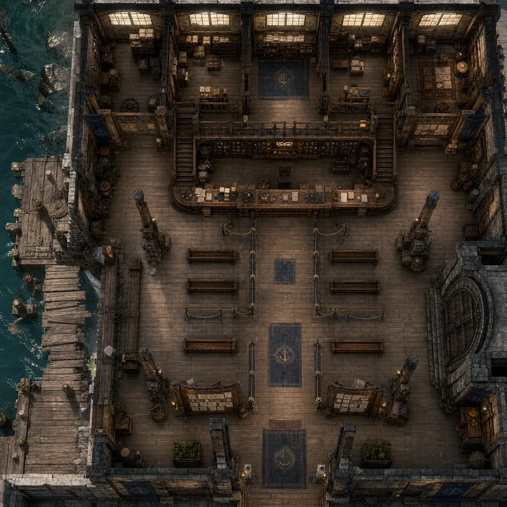
📍 101 계류관 내부 접수홀 전투맵
Gamemaster:
네 그런 배에 타고 있다면
아는게 없겠지요
Gamemaster:
그러면 계류관에서도 무언가 바쁜듯
사람들이 달려오고 소리치는게 보입니다
쉴라는 여러분을 보고 반가운듯 인사합니다
웬디 위버:
"안녕하세요! 이게 대체 다 무슨 일이에요?"
쉴라:
"실은 저희들도 전부 파악이 된건 아닙니다."
피아:
"...짐작가시는 바도 없나요? 보통 사태가 아닌만큼, 빠르게 움직여야 할거 같은데."
리리 펀치플러프:
"가능하다면 빨리 원인을 찾아야 할 것 같아서요."
쉴라:
"갑자기 저렇게 되었다는 것 밖에...몸에서 덩쿨이나 꽃같은게 돋아나더니"
루크:
"비슷한 일이 일어난 규모가 어느정도죠?"
쉴라:
"원인 자체는 알아냈습니다. 그들 몸에서 나는 덩쿨 같은 것들이 그렇게 만드는 것 같더군요"
"하지만 그 덩쿨이 뭔지는 아직 알 수가 없습니다."
할다론 미스바르:
"일부 사람만 변한거라면 분명 공통점이 있을 것 같은데... 크로스로드 토박이라거나, 특정한 종교를 믿던 자들이라거나... 변한 이들의 신원에서 특정되는 것은 없나?"
쉴라:
"지금 확인된 규모로는 7명이로군요. 하지만.. 다른 곳에서 그들이 낸 사상자들이"
"그 피해부분이 부풀어오르기 시작해서 어떻게든 고치는게 불가능해졌다고 합니다.."
할다론 미스바르:
"아...그럼 피해자들을 직접 보는게 빠르겠군"
피아:
"...확실히 기괴한 풍경이긴 하더군요."
쉴라:
"우리도 지금 조사중입니다... 피해자들을 한번 살펴보시겠습니까?"
할다론 미스바르:
"...(골치아픈 표정으로 얼굴을 쓸어내림)"
쉴라:
"할다론씨의 말이 맞을겁니다. 하지만... 지금 조사를 아직 시작도 못해서"
피아:
"...좋아요, 일단 피해자 분들을 만나보죠."
"도시가 이러한데..."
내레이터:
왈든을 해방시켜야한다! 하흐란놈들을 칠 기회다!
그 가운데 트위스커의 모습 역시 보이고 있습니다
닐라:
"아 왈든.. 거기도 정화하러가야하는데..."
쉴라:
그러면 피아가 말리러간다니 좀 불안한가봅니다
피아:
(ㅋㅋㅋㅋㅋㅋㅋㅋㅋㅋㅋㅋㅋㅋㅋㅋㅋㅋㅋㅋㅋㅋㅋㅋㅋㅋㅋㅋㅋㅋ
쉴라:
"괜찮으시면 지금은 이 사건에 집중해주시겠습니까?"
쉴라:
"저 코볼트의 언변이 상당히 교모하거든요"
쉴라:
"무엇보다.. 그 분노가 어디로 튈지 예측조차 안됩니다"
내레이터:
그러면 여러분을 희생자들이 있는 곳으로 안내합니다. 낡은 침대 위에 7명의 사람이 누워있습니다. 이들은...
피아:
"......" 발길이 떨어지지 않는지 주춤거리다가, 그곳에 볼릭과 니콜라스, 실버문 등도 있는걸 보고 이내 그들이 잘 얘기해줄거라 믿는지 일단 고개를 돌립니다
내레이터:
온몸이 덩쿨이 칭칭 감겨있고 옆에 있는 사람들이 그게 자라날 때마다 가치지기를 하고 있습니다
피아:
"트위스커 씨와는 이 일이 끝나면 대화를 해봐야겠군요..."
"....계속 자라나는겁니까?"
루크:
(과연 트위스커가 그 때까지 살아 남아 있을지...
Gamemaster:
그러면 여러분은 이들에게 조사를 해볼 수 있습니다
내레이터:
그들의 몸에는 방금 본 것 처럼 덩쿨이 칭칭 감겨져 있습니다. 다만 방금보다는 좀 더 차분히 살펴볼 수 있겠군요
그러면 그들 몸에는 상처 하나도 보이지 않습니다. 그런데...
닐라:
Guidance 예지계 자발적인 크리처를 건드리고 기술 하나를 선택합니다. 주문이 끝나기 전에 크리처는 선택한 기술을 사용하는 능력 판정에 1d4를 더합니다.
내레이터:
그러면.... 피해자 중 하나를 살펴보자
그나마 원형이 제일 유지된 피해자에게서 호패 하나가 발견됩니다. '그녀'로 추정되는 사람입니다.솔린 이라는 사람인데 그의 신분을 증명하는 패입니다. 거기에 따르면 작년에 이주해온 사람으로 추정됩니다.
그리고 몸뚱이에서 뭔가 가지고 있던 물건이 보입니다.
할다론 미스바르:
실반이면 할다론이 읽을 수 있는데 피아 옆에 서서 같이 확인해보겠습니다
내레이터:
부적....아니 아뮬렛 아니... 참 종류하여튼 그런 종류가 발견됩니다
그리고 등에는 묘한 문신 같은게 새겨져 있군요
@봤을 때 어떤 문신인지 알아볼수 있나요?
할다론 미스바르:
(와 읽을 수 있는 사람 짱 많아요
내레이터:
원형을 그리고 그 옆에 갖은 문구를 새겨놓았지만 두서없고 이해할 수 없는 페이언어로 되어있습니다.(실반)
할다론 미스바르:
(아 실반을 읽을 수 있어도 종교학을 굴려야 하는 건가요?
종교하ㅓㄱ
루크:
(루크도 컴프리헨드 랭귀지로 확인해봅니다.)
모드:
Comprehend Languages 1레벨 • 예지계 For the duration, you understand the literal meaning of any language that you hear or see signed. You also understand any written language that you see, but you must be touching the surface on which the words are written. It takes about 1 minute to read one page of text. This spell doesn't decode symbols or secret messages.
쓸쓸하게
종교학!
루크:
Clockwork Earwig Trinket 귀에 부착하는 약 1인치 크기의 구리제 태엽 장치입니다. 행동으로 착용하거나 제거 할 수 있습니다. 착용 중 청각에 의존하는 지혜(감지) 판정에 이점 을 받습니다. 두 번 두드려 최대 1분간 녹음 하고 다시 두 번 두드리면 일찍 멈춥니다. 한 번 두드려 자신의 귀에 재생하고 다시 한 번 두드리면 멈춥니다. 재생 중 손가락을 대고 있으면 일시 정지하고 떼면 이어집니다. 녹음은 하나만 저장 하며 새 녹음은 이전 것을 지웁니다. 착용 중 행동으로 명령어를 말하면 언어 이해(Comprehend Languages) 를 시전합니다. 장치를 제거하면 주문이 끝납니다. 이 기능은 다음 새벽까지 다시 사용할 수 없습니다. Action 1시간 자신 Self 장비 중 미숙련
(옆에 설게요
Gamemaster:
언어이해 주문을 쓰는군요 ㅋㅋ
(아뇨 읽을 수 있는 사람이
(종교학을 굴립니다 ㅋㅋㅋ
(사실 안다고 해도 이상하지 않지요
루크:
Book(크로스로드의 신앙) 모험 장비 책은 소설 또는 비소설을 담고 있습니다. 주제에 관한 정확한 비소설 책을 참고하면, 그 주제에 대한 지능(신비학, 역사, 자연, 또는 종교) 판정에 +5 보너스를 얻습니다.
(아 성공이시구나
내레이터:
할다론은 딱봐도 이것이 어떠한 의식의 흔적임을 알 수 있습니다
어떤 의식인지는 모르겠지만... 말입니다. 이 덩쿨에게서 무언가가 지속적으로 힘을 주고 있는 것 같군요
할다론 미스바르:
"이 문양은...의식에 쓰이는 것 같은데...이 사람들 모두 새겨져있군. 한 사람에게 받은거야"
내레이터:
알 수 있는건 이 정도일 것 같습니다. 허나.. 이 사람들이 전부
대동소이한 문양을 새기고 있습니다
확신하건데... 전부 한명이 새긴 것 처럼 보입니다
할다론 미스바르:
이 문양을 없앨 수 있나요? 문신처럼 새긴거라 안되려나
피아:
"누군가 의도적으로 이런 일을 벌였다는거 자체는 확실해졌군요."
할다론 미스바르:
"...? (유리병을 주워듭니다)"
유리병이 굴러온 방향을 봅니다
내레이터:
그러면... 매우 강력한 의식으로 느껴집니다.
루크:
"할다론 씨가 가지고 있는 문신(섀도블레이드)과는 좀 다른 거죠?"
그 때 통하고 떼구르르르르 하고
할다론 쪽으로 유리병 하나가 굴러옵니다
할다론 미스바르:
"...음 내 손목에 새긴 문신은 의식용이 아니니 이 현상과는 관계없을거네"
(오 의사
Gamemaster:
저 멀리서 누군가가 똘똘똘똘 달려오더니
그것을 줍습니다
할다론 미스바르:
"...? 누구지? " 말하면서 의사가 들고 있는 유리병을 쳐다봅니다
(ㅋㅋㅋㅋㅋㅋㅋㅋㅋㅋ
(광대 씨 투잡 뛰시나봐
(물끄러미 쳐다봅니다.)
의사:
"그래서.. 살펴보시니깐 어떠셨나요?"
라며 할다론과 여러분을 바라봅니다
의사:
"아, 저는 이 사태를 규명하려고 쉴라님꼐서 대려온 의사입니다."
라며 악수를 청합니다
할다론 미스바르:
(진짜 의사가 맞나 의사 아닌데 의사인척 하고 들어온거 아닌가 통찰 굴려봐도 되나요
피아:
뻘쭘한 분위기에 일단 먼저 인사를 받아줍니다
의사:
그러며 닐라에게 다가오더니 코를 킁킁 댑니다. " 흐음 좋은 당신에게서 냄새가 나는군요. "
리리 펀치플러프:
"코가 좋으신가봐요...!"
닐라:
"안녕하세요? 저는 달오름 숲의 닐라라고해요"
모드:
세탁이 잘못 된 걸까 하고 팔 들어서 냄새맡아보고
의사:
"이야기는 많이 들었습니다. 달오름.. 무슨 숲이라구요? 어쩃든..."
닐라:
(몰래 모드 냄새맡고 완전 좋은 냄새난다고 속삭여줌)
피아:
(갑자기 이게 뭔 무례한 짓이지 라는 눈빛으로 바라보다가 일단 참습니다
루크:
"그래서 당신은 뭘 좀 알아낸 게 있나요?"
의사:
"아, 전혀요... 그들이 이상한 의식을 받은 것 같은데 그 위치까지는 잘 모르겠거든요"
닐라:
"달오름 숲이요! 혹시 아시나요? 카이엔 옆에 있는 곳인데, 사람들이 잘 안오는 곳이거든요! 와!"
할다론 미스바르:
"...정신사납군(작게 중얼거림)"
Gamemaster:
"그런데 듣기로는 이 솔린이라는 사람은.."
내레이터:
그러면... 이 사람이 나타나자 그 때부터 뭔가 정신이 어질어질함을 느낍니다. 이것저것 움직이고 갑자기 관심사가 쉭쉭 바뀌어서
감정의 상태를 파악하기가 무척이나 어렵군요
피아:
(피아 오오라 안에 있어도 비슷하나요?
할다론 미스바르:
(3연펌블 진짜 너무 웃겨요
의사:
"이 사람들은 전반적으로 얼마 전에 '오스암' 이라는 곳을 갔다왔다고 하더라구요"
"거기서 무슨 일이 있던걸까요?"
(ㅋㅋㅋㅋㅋㅋㅋㅋㅋㅋㅋㅋㅋ
피아:
(ㅋㅋㅋㅋㅋㅋㅋㅋㅋㅋㅋㅋㅋㅋㅋㅋㅋㅋㅋㅋㅋㅋㅋㅋㅋㅋㅋㅋㅋㅋㅋ
피아:
(ㅋㅋㅋㅋㅋㅋㅋㅋㅋㅋㅋㅋㅋㅋㅋㅋㅋㅋㅋㅋㅋㅋㅋㅋㅋㅋㅋㅋㅋㅋㅋㅋㅋㅋㅋㅋㅋㅋㅋㅋㅋㅋㅋㅋㅋㅋㅋㅋㅋㅋㅋㅋㅋㅋㅋㅋㅋㅋㅋㅋㅋㅋㅋㅋㅋㅋㅋㅋㅋㅋㅋㅋㅋㅋㅋㅋㅋ
솔직히
기록할만한 가치가 있는
장면이었다
닐라:
Guidance 예지계 자발적인 크리처를 건드리고 기술 하나를 선택합니다. 주문이 끝나기 전에 크리처는 선택한 기술을 사용하는 능력 판정에 1d4를 더합니다.
(다가져갔네
내레이터:
여러분이 모르는건 이상하지 않습니다
리리 역시 풍문으로만 들었으니 말입니다
북쪽에 있는 마을인데 여러분은 상당히 장기간 동안
북쪽은 쳐다도보지 못했을겁니다
왜냐면...
화살성채와 가까우니까요
리리 펀치플러프:
"저도 자세히는 알지 못해요, 그냥 그런 곳이 있다는 것만 알고 있는 정도고..."
(왈든으로 가는 길이랑 루트가 겹치나요?
전혀 안겹칩니다
오히려 멀어지는군요
피아:
"일단 그 쪽으로 가서 조사해봐야할지도 모르겠군요."
의사:
"후훗 거기서 온 사람들이 있을지도 모르지 않겠어요?"
"아니면 방문한 사람이라도.."
"일단 감사합니다. 저희 쪽에서 좀 더 조사해보도록 하죠."
할다론 미스바르:
"요즘 화살성채 분위기가 안좋은 것으로 아는데 잘도 그 근처까지 향했군..."
내레이터:
그러면 여러분은 시체? 들이 있는 곳에서 나오나요
피아:
@살펴봤을때 그 외 특별한 점은 더 없나요?
루크:
"알아낸 단서가 이것밖에 없으니 가 볼 수 밖에요."
리리 펀치플러프:
"그 사이에 무슨 일이 생길까봐 걱정이긴 한데..."
닐라:
(근데 문신은 사실상 피부를 긁어내고 잉크를 채운 거에 가깝잖아요? 피부를 재생시켜서 덮어버려도 소용이 없는거겠죠?)
(sad
"어때요.. 뭔가 알아내셨나요?"
할다론 미스바르:
"그들에겐 어떤 의식을 하기 위해 페이언어로 이루어진 문신이 새겨져 있었네. 그리고 다들 최근 들어 오스암이라는 곳을 갔다왔다고 하더군"
"오스암에 대한건 네가 데려온 의사가 찾아낸 것인데...모르고 있었나?"
리리 펀치플러프:
"가봐야 할 곳이 생긴 것 같긴 한데요..."
쉴라:
"희생자들을 조사했을 뿐인데 거기까지 알아내신건가요?'
피아:
"저희가 조사한 것도 있지만, 쉴라 씨가 보내셨다는 그 의사 분의 역할도 컸죠."
"의사요?"
"아까 본인을 그렇게 자칭하던 사람이..."
쉴라:
"저는 의사를 부른 적이 없는데요...?"
피아:
"...." @뭔가 쎄함을 느끼고 다시 안치실로 돌아가봅니다
할다론 미스바르:
"...아무래도 우리가 오스암으로 가길 원하는 자가 있나보군"
내레이터:
그러면... 그곳에는 아무도 없습니다.
내레이터:
그거 외에는 아무것도 달라진게 없습니다
피아:
"...혹시 여기 외에 다른 출구가 있나요?"
피아:
"........" 뭔가 찜찜함을 느끼는 표정
피아:
@그러면 호패를 보여주면서 오스암 출신이 맞는지 확인해줄수 있는지 물어봅니다
리리 펀치플러프:
(어쩐지 가고 싶지 않은...
쉴라:
"으음... 밖에서 살다온 사람임은 맞군요. 하지만 이걸로는 출신지 까지는 알 수 없겠어요"
할다론 미스바르:
"더이상 단서가 없다면 그럴 수 밖에 없겠다만...음...이 솔린이란 자도 모험가인가? 계류관에서 활동한 적이 있다면 최근에 같이 활동한 자가 있는지 정도는 확인해볼 수 있을것 같은데"
쉴라:
"하지만 호패가 있으니 수소문 정도는 가능하겠죠"
"으음..."
"할다론 씨 말대로 누군가 우리를 부르는거라면... 함정일지라도 발을 들여놔야하는 것일까요?"
굉장히 찜찜한 표정
쉴라:
"이 사람을 아는 사람을 찾아봐도 되지 않을까요?"
리리 펀치플러프:
"아 정말 가고 싶지 않은데 가긴 해야 할 것 같구..."
(머쓱
쉴라:
"이 도시는 큰거같으면서도 좁으니까요"
(아니지 모험가네
쉴라:
"회색개 술집에서 마셨다면... 그럴 가능성이 높겠습니다"
쉴라:
"이 도시에서 계류관을 통하지 않는 모험가는"
내레이터:
그러면... 여러분은 이곳에서 수소문을 해볼 수 있겠군요.. 이것은 '설득' 굴림이 되겠습니다 누군가 한다면 말이죠
쉴라:
아니면 다른 행동을 해보고 있을 수도 있겠습니다
리리 펀치플러프:
(설득 +7이라고 자랑하려고 했는데
루크:
"다른 방법이 없다면 쉴라 씨 말대로"
"이 사람들에 대한 정보를 먼저 모아볼까요?"
루크:
"아까 그 의사가 준 정보들은 아무래도 수상하니까 말이에요."
리리 펀치플러프:
"냄새를 막 맡는 것도 그렇고..."
내레이터:
솔린에대해 알아볼 사람 한명과 오스암에 대해서 알아볼 사람 그 밖에 어떤거에 대해 굴려볼 수 있겠습니다 자 다들 선언해주세요
Gamemaster:
창의적으로 아무거나 말해봐도됩니다 dc는 좀 높겠지만요!
리리 펀치플러프:
(리리가 오스암에 대해 알아볼까요? 아무래도 이름을 들어보긴 했으니까?
Gamemaster:
네 좋아요 리리는 그러면 +2 를 부여하겠습니다
피아:
(피아는 설득 숙련 있으니간 루크 설득 도움 줄게요
루크:
(루크는 솔린의 외형, 장비, 호패 같은 것들을 잘 숙지한 뒤에 아는 사람이 있는 지 유동인구가 많은 곳에서 수소문 합니다.)
할다론 미스바르:
(할다론은 무엇을 할 수 있는가...확인한 문신에 대해서라도 추가조사를 해봐야 할까요...
Gamemaster:
피아는 루크를 따라다니면서 도옴받는군요
닐라:
(그럼 닐라는 리리랑 함께 다니면서 가이던스 걸어주겠습니다)
닐라:
Guidance 예지계 자발적인 크리처를 건드리고 기술 하나를 선택합니다. 주문이 끝나기 전에 크리처는 선택한 기술을 사용하는 능력 판정에 1d4를 더합니다.
Gamemaster:
좋아요 그러면 굴려봅니다
모드:
(모드도 리리 따라다니면서 도와주는걸로
할다론 미스바르:
(비전학이 +3입니다 선생님 ㅋㅋㅋㅠ
루크:
(그럼 피아 도움 받아 설득 이점으로 굴리겠습니다~
(ㅋㅋㅋㅋㅋ
리리 펀치플러프:
(리리는 그러면 최대한 여러 사람을 만나면서 출신인 사람이 있는지 이래저래 알아봅니다)
할다론 미스바르:
(이게 무슨 소리에요 진짜 ㅋㅋㅋㅋㅋㅋㅋㅋㅋㅋㅋㅋㅋㅋㅋㅋㅋ
(므ㅜㅏ 머인
Gamemaster:
마법학 25 !!!!!!
닐라:
(친구랑 같이 다니면 자동위협굴림아닌가)
(대성공 뜨면 성공으로 쳐주시죠
(ㅋㅋㅋㅋㅋㅋㅋㅋ
Gamemaster:
주사위 23만 나오면 되잖아요
20나오면 인정해드림
피아:
(ㅋㅋㅋㅋㅋㅋㅋㅋㅋㅋㅋㅋㅋㅋㅋㅋㅋㅋㅋㅋㅋㅋㅋㅋㅋㅋㅋㅋㅋㅋㅋㅋㅋㅋㅋㅋㅋㅋㅋㅋㅋㅋㅋㅋㅋㅋㅋㅋㅋㅋㅋㅋㅋㅋㅋㅋㅋㅋㅋㅋㅋㅋㅋㅋㅋㅋㅋㅋ
누가 조작한거같네 ㅋㅋㅋ
닐라:
ㅋㅋㅋㅋㅋㅋㅋㅋㅋㅋㅋㅋㅋㅋㅋㅋㅋㅋㅋㅋㅋㅋㅋㅋㅋㅋㅋㅋㅋㅋㅋㅋㅋ
리리 펀치플러프:
ㅋㅋㅋㅋㅋㅋㅋㅋㅋㅋㅋㅋㅋㅋㅋㅋㅋㅋㅋㅋ
닐라:
ㅋㅋㅋㅋㅋㅋㅋㅋㅋㅋㅋㅋㅋㅋㅋㅋㅋㅋㅋㅋㅋㅋㅋㅋㅋㅋㅋㅋㅋㅋㅋㅋㅋㅋㅋㅋㅋㅋㅋㅋㅋㅋㅋㅋㅋㅋㅋㅋㅋㅋㅋㅋㅋㅋㅋㅋㅋㅋㅋㅋㅋㅋㅋㅋㅋㅋㅋㅋㅋㅋㅋㅋㅋㅋㅋㅋㅋㅋㅋㅋㅋㅋㅋ
무슨 조사파트에서 ㅋㅋㅋ
아 웃겨
오늘 그냥 주사위만 굴렸는데 웃기네
내레이터:
그러면... 순차적으로 말하자면..
그러면 루크는 솔린이 얼마 전 언데드 습격 사건으로 엄청나게 크게 다쳤다는 이야기를 듣습니다. 어느정도냐면 팔을 거의 못쓰게 되었다는 말을 들었습니다
내레이터:
그런데 어느날 갑자기 솔란이 말짱해져서 길드로 돌아왔다는 말을 들었습니다
그녀를 아는 사람이 그녀에게 물어봤더니
비밀스러운 마을로 갔다왔다. 라는 말을 했다는 소리를 듣습니다.
할다론 미스바르:
(갑자기 공포물이 되고 있어요
루크:
"이게 아까 그 의사가 말한 오스암일까요?"
내레이터:
모드와 닐라 그리고 리리는 주변을 수소문하면서
오스암에 대한 진짜 이상한... 것을 알게됩니다
리리 펀치플러프:
(진짜 이상한 < 벌써 무섭다
내레이터:
그곳을 갔다온 사람이 단 한명도 없습니다. 아니 정확히는... 그곳을 갔다고 말하는 자들 전부 그 이후로 연락이 끊어졌다는 것을 알 수 있습니다
할다론 미스바르:
"...(손에 묻은 피를 닦아내봄)"
내레이터:
그 어떤 정보도.. 얻을 수 없었습니다
내레이터:
그리고 할다론은.... 문신을 조사하고 있는데....
할다론 미스바르:
(이정도 나이 먹도록 위치헌터로 활동했으면 왠만한 일에는 면역이 있지 않을까요 ㅋㅋㅠ
문신을 조사하는 도중이었습니다
그런데 갑자기.. 눈 앞이 깜깜해지더니ㅏ
당신의 손이 피로 물들기 시작합니다
할다론 미스바르:
장미를 보다가 주변 풍경을 확인하듯 둘러봅니ㄷㅏ
머라공쇼
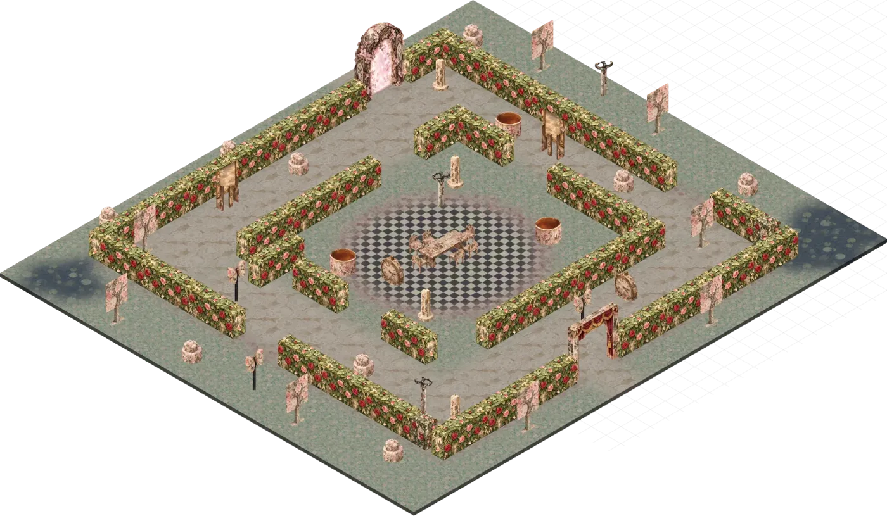
📍 ISO — 페이와일드 장미 미궁
내레이터:
그러면 갑자기 이상한 곳이 보입니다
주변이 장미가 나있고 그 장미가 지나치게 잘 정돈되어 있습니다. 하지만
무언가 기묘한 느낌을 줍니다
할다론 미스바르:
"우리가 무언가 해주길 바라는 건가?"
트리빌리혼:
그리고 탁자 건너편에는 트리빌리혼의 모습이 보입니다
트리빌리혼:
"왜 너희들은 영향을 받지 않았을까"
트리빌리혼:
"그건 누군가가 너희들에게 매세지를 남기고 싶어해서가 아닐까?"
피아:
(닐라가 아니라 로웬이 나오고 있어요 하다님
갑자기 트리빌리혼의 가슴팍에서 붉은 피가 쏟아져나오기 시작합니다
뒤에 누군가가 칼로 찌른 것 처럼보입니다
내레이터:
그것에 시선이 빼앗기고 주변을 바라보면
장미정원이 아닌 알 수 없는 곳으로 와있습니다
할다론 미스바르:
"...잊지 말아달라니 무엇을...(인상을 잔뜩 찌푸린채 머리아픈듯 관자놀이를 꾹꾹 누름)"
트리빌리혼:
그리고 트리빌리혼은 바닥에 그대로 쓰러집니다
"의식이 너에게 잊지말아달라고 한다던가..."
알 수 없는 이상한 비전이군요
피아:
그러고 있으면 루크랑 두런두런 이야기 하면서 돌아오고 있겠군요
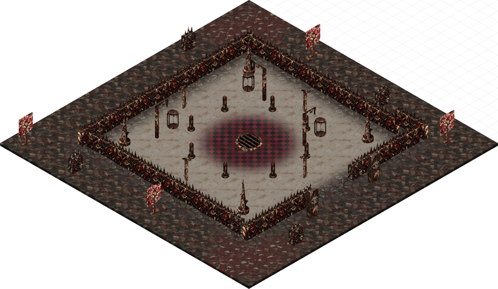
📍 ISO — 위험한 페이와일드 가시 투기장
Gamemaster:
그러면 잠깐 졸았을까요? 어쩃든 그런 이상한 감각을 느꼈습니다
리리 펀치플러프:
(저희도 얻을 정보가 없어서 금방 들어올 것 같네요...)
할다론 미스바르:
"...아까 봤던 문신을 조사하던 중 뭔가 본게 있어서 그렇네. 이런 조사를 하다보면 흔히 있는 일이지(다그닥씨를 피해 멀리 떨어짐)"
피아:
"악몽이라도 꾸셨나요...? 안색이 안좋은데..."
할다론 미스바르:
"...? 이 말이 날 따라오는 것 같은데(피아 쳐다봄)"
리리 펀치플러프:
"저희 왔어요, 앗... 무슨 일이 있었나요?"
피아:
"할다론 씨가 마음에 들었나봐요." 다행이다~ 하는 속편한 표정으로 보는중
모드:
귀엽다~ 하는 표정으로 말이랑 할다론 보고 있고요
할다론 미스바르:
"... ... 아무튼... 이 피해자들의 몸에 새겨진 의식 같은 것이...생각보다 더 강력한 종류인 것 같다. 내가 본대로 말하자면 우리에게 뭔가 메세지를 남기고 싶어 하는것 같더군 (말의 주둥이를 조심스럽게 밀어내면서 말함)"
내레이터:
자 그러면 여러분은... 여러분끼리 얻은 정보를 나눕니다.
피아:
@피아도 루크와 알아온 것을 간단하게 정리해서 공유해줍니다
"메세지를 남기고 싶다라...?"
루크:
"솔린이란 사람은 언데드의 습격을 받은 적이 있다고 하더군요. 그 때 상처로 팔 한 쪽을 잃었는데"
"어느 순간 완치가 되었다고 해요."
"지인이 그러는 데 뭔가 이상한 마을을 다녀왔다고 그 사람이 말했다는군요."
리리 펀치플러프:
"으스스한데요? 오스암은... 여러 사람에게 묻긴 했는데 신통한 답이 없더라구요. 정확하게는... 돌아온 사람이 없었어요."
Gamemaster:
(최근의 언데드 습격은....
리리 펀치플러프:
"갔다는 사람은 있는데, 돌아오는 사람이 없었던 거 같아요."
피아:
"...이야기가 올곧게 한 곳을 가리키는 군요."
닐라:
(가장마지막언데드습격이.. 아마제루스...
피아:
"....그러면 결국 그 마을로 가보는 수 밖에 없을까요."
닐라:
"좋아요.. 더 많은 피해가 생기기전에.."
피아:
"어쩌면 함정일수도 있지만.... 지금 당장 다른 대안이 없으니 말이죠."
"결정 했다면 빠르게 움직이죠. 수소문 하느라 꽤 많은 시간을 써버렸네요."
리리 펀치플러프:
"내키진 않지만 어쩔 수 없네요!"
닐라:
(떠나기 전 닐라는 쉴라에게 뿌리를 잘라야한다는 것을 신신당부할 것 같습니다)
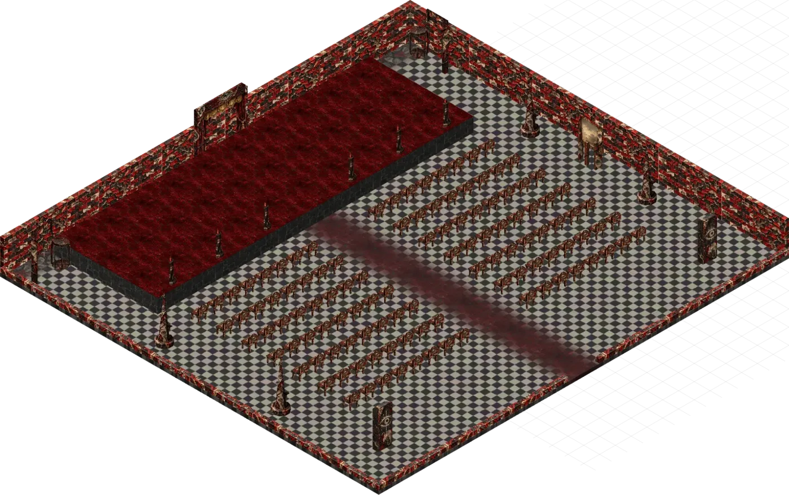
📍 ISO — 위험한 페이와일드 처형 극장
이 사태를 겪게되고 여러분이 떠나있는 동안
트위스커의 난동을 겪게되겠군요
Gamemaster:
자 그러면 5분 쉬고 50분에 재개하겠습니다
Gamemaster:
맵 만들어진거 짱맘에드는군
(ㅋㅋ
(꺄아아아아아아아악!!!!!!!!
닐라:
(진짜 모드가 블라이트썼을때 뭉크 절규마냥 비명질럿을것..
생각한 것 보다
분량이 엄청 많이남진 않았어요 ㅋㅋㅋ
리리 펀치플러프:
(오늘 조사 파트? 너무 재밌어서 좋았어서 ㅋㅋㅋ
할다론 미스바르:
갑자기 말이 너무 실사가 됐는데요
조금 무서울지도
으아악
말은 지능 높고 예민해서 상대하기 피곤하다구욧ㅋㅋㅋㅋㅋㅋㅋ
리리 일부러 돌리신줄 알앗는데 아니었군요
ㅋㅋㅋㅋㅋㅋㅋㅋㅋㅋㅋㅋㅋㅋㅋㅋ
우리 다그닥 씨한테 왜 그래요
도망간다
다그닥씨 너무 커다래..
다그닥 씨:
(아까 일부러 돌리신거 아니었어요?
그런 현실적인 이유가
아까 얘기할때 슥슥 돌아가던데
닐라:
(지능이높고예민해서 귀엽지않아요...?
다그닥 씨:
혹시 채팅 ㅅ치려다가 뭔가 잘못 ㅅ누르셨나
할다론 미스바르:
귀엽다고 하기엔 너무...크지 않나...
리리 펀치플러프:
...뭘 눌렀는지도 모르겠기 때문에
(휠돌리시면
(돌아가용
컨트롤 누른 상태에서 휠돌리는
Gamemaster:
습관이 있으신거 아니신..?
리리 펀치플러프:
지금 집 모니터가 아니다 보니까 글씨가 너무 작아서 확대하려고 휠 돌렸어서(..
Gamemaster:
세션하다가 저거 자기도 모르게 돌리는 분이
아
노트북이구나
ㅋㅋㅋㅋㅋㅋㅋㅋㅋㅋㅋㅋㅋㅋ
리리 펀치플러프:
모니터인데 ㅋㅋㅋㅋ 저의 집보다 너무 멀리 있어서 ㅋㅋㅋㅋㅋ
Gamemaster:
저거 왜 돌리는지 몰랐는데
그거 땜에 확대하다가 돌아가는거였군
쉬는 시간에 집에가시지!
Gamemaster:
아니... 안전한 집으로 가라구요!
ㅋㅋㅋㅋㅋㅋㅋㅋㅋㅋㅋ
여기서 집까지 걸어서 10분 정도인데 그 사이가 완전 번화가라서
리리 펀치플러프:
아주... 아주 번화가라서...
(그만 번화해
Gamemaster:
너무 어두운 음악만 틀었으니
좀 활기찬 음악과 함꼐 시작하겠습니다
내레이터:
여러분은... 오스암으로 향합니다... 제법 거리가 있는 곳이겠군요
그 동안에 여러분은 모르겟지만
크로스로드에서 소동이 생겼습니다
트위스커의 주도로...말입니다
하지만 여러분은... 그들이 간 짙은 진액과 늪이 우거지는
숲이 울창하고
자연의 녹음으로 넘치는 곳을 거닐고 있습니다
피아:
(여전히 볼릭이랑 니콜라스가 잘 설득해줄거라고 믿는중
루크:
(출발하기 전에 관자놀이에 바람 구멍을 뚫어줬어야 했는데
"소문을 듣고 척박한 곳을 상상했습니다만 이건 오히려..."
할다론 미스바르:
크로스로드에서 봤던...그 덩쿨들과 비슷한 식물들인지 관찰해봅니다
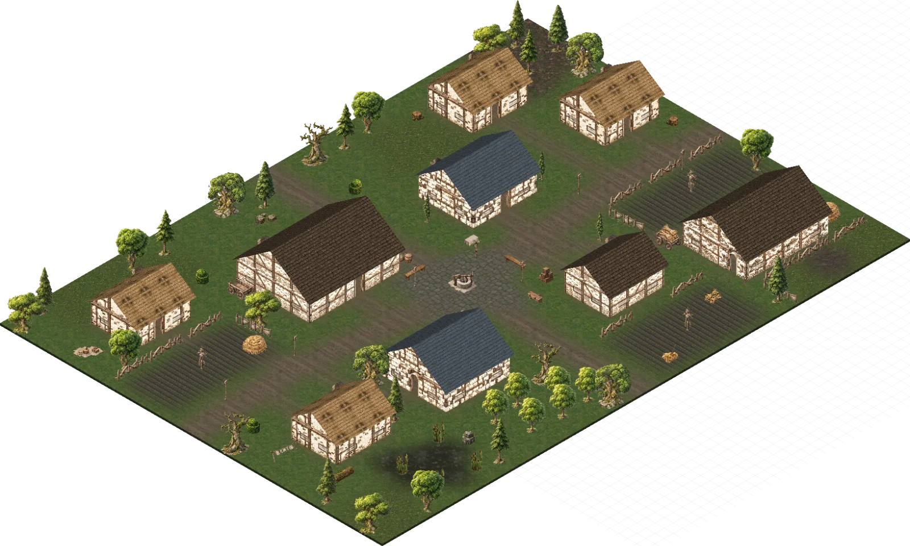
📍 ISO — 시골 마을 외관
내레이터:
그러면 마을은 매우 풍족하게 주변이 무성합니다
하지만... 그 무성함이 좀 과하군요.
닐라:
"기괴해요.. 이건 자연스럽지 않아요..."
리리 펀치플러프:
(의심의 눈초리로 주변을 돌아봅니다)
내레이터:
현기증이 날 정도의 넘치는 생명력을 느낍니다
내레이터:
네 비슷한 식물들이 자라고 있습니다
마을은 무언가 엄청나게 조용합니다
닐라:
(ISO는 되게 척박해보이는데욬ㅋㅋㅋㅋㅋㅋㅋㅋㅋㅋㅋㅋㅋ)
혹시 다시 자라나요
Gamemaster:
(바닥 텍스쳐가 파란색이잖아요
할다론 미스바르:
예전에 방문했었던 슬럼버베일과 비슷한 느낌인지
내레이터:
네 얼마 안가서 재생하는 느낌입니다
닐라:
(닐라는 마을을 돌아다니면서 사람이 있는지 찾아보려고 할 것 같습니다)
"아무도 안계세요???"
피아:
"제가 잘못본게 아니라면 이 풀이 다시 자라난거 같은데..."
내레이터:
뭔가가 쿵쿵쿵쿵 하고 지나가는 것 처럼 보입니다
리리 펀치플러프:
"무슨 트롤도 아니고 재생력이..."
내레이터:
너무 잠깐이라서 실루엣만 보였습니다
할다론 미스바르:
실루엣이 어느방향으로 사라졌는지 감지할 수 있을까요
여러분은 뭔가 이상함을 느낍니다
주변의 풍경이 실시간으로 바뀌는 느낌이 듭니다
비슷한 것을 누군가는 겪은 적이 있죠
Gamemaster:
한발자국 한발자국 거닐 때마다
얆은 레이어 같은것을 뚫고가는 이상한 감각이 느껴집니다
그리고 옆에 있는 나무의 색, 마을의 생김세 이런게
한발자국 거닐 때마다 조금씩 변형됩니다
할다론 미스바르:
"해그들이 자신의 은신처를 위장하기 위해 넓은 범위에 환영마법을 쓰기도 하는데...같은 종류인가?"
닐라:
Guidance 예지계 자발적인 크리처를 건드리고 기술 하나를 선택합니다. 주문이 끝나기 전에 크리처는 선택한 기술을 사용하는 능력 판정에 1d4를 더합니다.
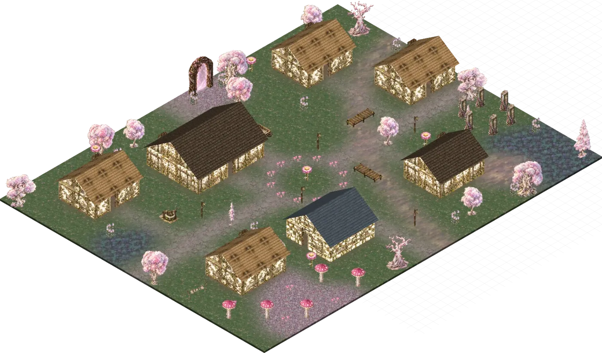
📍 ISO — 페이 마을 외관
핑크색의 꽃으로 변하고 있습니다
이곳에서 느껴지는 느낌
페이와일드의 느낌입니다
피부에 와닿는 그 감각!
하지만 무언가 다릅니다
친숙하면서도 무언가 다름이
닐라를 불쾌하게 만들 수도 있겠군요
📍 [삭제 대상] 점령된 왈든 — 공명 펌프장
할다론 미스바르:
"주변이...많이 바뀌었군..."
닐라:
"이거 꼭.. 페이와일드로 향하는 것 같은..
"페이와일드요...?"
닐라:
"그렇지만 뭔가 달라요.. 기분나빠..."
피아:
"....뭔진 몰라도 정신 바짝 차려야겠네요."
닐라:
"일반적인 페이와일드가 아닌 것 같아요.."
피아:
"혹시 페이와일드라면... 뭔가 주의해야할 점이 있을까요?"
"음..."
"보편적인 상황으로 생각하지 않는게 좋을까요..."
"역시 그럴때 답은 하나겠죠. 나아가보겠습니다."
@하고 뚜벅뚜벅 걸어갑니다
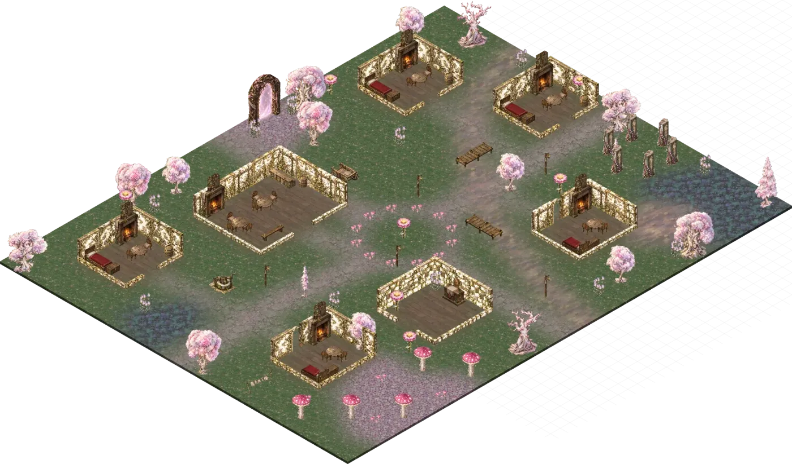
📍 ISO — 페이 마을 내부
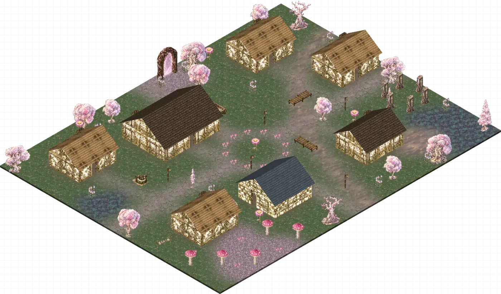
📍 ISO — 페이 마을 외관
닐라:
Guidance 예지계 자발적인 크리처를 건드리고 기술 하나를 선택합니다. 주문이 끝나기 전에 크리처는 선택한 기술을 사용하는 능력 판정에 1d4를 더합니다.
루크:
Clockwork Earwig Trinket 귀에 부착하는 약 1인치 크기의 구리제 태엽 장치입니다. 행동으로 착용하거나 제거 할 수 있습니다. 착용 중 청각에 의존하는 지혜(감지) 판정에 이점 을 받습니다. 두 번 두드려 최대 1분간 녹음 하고 다시 두 번 두드리면 일찍 멈춥니다. 한 번 두드려 자신의 귀에 재생하고 다시 한 번 두드리면 멈춥니다. 재생 중 손가락을 대고 있으면 일시 정지하고 떼면 이어집니다. 녹음은 하나만 저장 하며 새 녹음은 이전 것을 지웁니다. 착용 중 행동으로 명령어를 말하면 언어 이해(Comprehend Languages) 를 시전합니다. 장치를 제거하면 주문이 끝납니다. 이 기능은 다음 새벽까지 다시 사용할 수 없습니다. Action 1시간 자신 Self 장비 중 미숙련
Vegepygmy Moldmaker:
그러면 내부에는
몸에 꽃이 핀 이상한 사람 같은게 보입니다
덩쿨들이 뭔가 움찔!!! ! 한 느낌입니다
"설마..."
내레이터:
이것이 '살아있다' 라는 느낌이 드는군요
피아:
"ㅇ, 이것도 일반적인 일인가요...?" 닐라 쪽을 봅니다
닐라:
"........아마..도요......?"
"페이와일드는.. 물질계의 상식과는 많이 떨어진 곳이니까요.."
Assassin Vine:
그러면 당신이 말을 걸자
Assassin Vine:
꿈툴 거리더니 깜짝 놀랍니다
내레이터:
당신의 말에 반응하는 것 처럼 보이는군요!
내레이터:
그러면 줄기에게 우호적으로 접근하는군요.
한면 태도를 묘사해보시지요! 그리고 설득입니다
(닐라가 해야하는 거겠죠?
닐라:
"저는 달오름숲에서 온 드루이드에요! 여기엔 처음와서 혹시 줄기님이 안내해주실 수 있나요?"
Assassin Vine:
그러면 줄기는 꿈툴 꿈툴거립니다.
그러더니
닐라에게 다가오는군요
Assassin Vine:
줄기를 펼쳐서 당신을 이리저리 살펴보는 것 같습니다
Guidance 예지계 자발적인 크리처를 건드리고 기술 하나를 선택합니다. 주문이 끝나기 전에 크리처는 선택한 기술을 사용하는 능력 판정에 1d4를 더합니다.
피아:
@피아는 혹시 무슨 일 있으면 달려들 기세를 취합니다
닐라:
(머지 유리함으로뜨네요 core flags)
뭔가 가지고 있는거 아니신?
(깨무는
(매직 아이템
(ㄱ마사해영
Gamemaster:
(유령 아가리 저거 생각보다 엄청 좋은 템이었구나
닐라랑 세상에서 제일 안어울리는 템!
내레이터:
그러면 환영한다는 듯이 흔들거립니다
리리 펀치플러프:
(진짜 이름이 유령 아가리군요
쿵쿵!! 거리는 소리를 내면서
리리 펀치플러프:
(그런 닐라 모습을 흥미롭게 구경합니다
Troll:
누군가가 다가오는 소리가 들립니다
"의식에 참여하려고 왔냐!"
피아:
"...잘은 모르겠지만 잘 된거 같죠...?" 소근소근
내레이터:
그러면 그 괴물 몸에도 덩쿨이 덮혀있습니다
(트롤도 페이라는사실을 알고계십니까? 고블린도 페이입니다
"의식이라 하심은...?"
Troll:
"뭐야! 다친 사람이 아니잖아!"
"건강한 사람들이 여길 무슨 일이지?!"
루크:
"건강한 사람.... 다친 사람.... 의식...."
닐라:
"저흰 줄기님의 초대를 받고 왔어요!"
(세상 무해한 웃음)
리리 펀치플러프:
"아픈 사람만 의식에 참여 가능한가요?"
Troll:
"치유받으려고 온 자들이 온다는 말은 들었건만!"
루크:
"솔린이란 사람도 팔이 그랬다고 했고... 의식용 문신이라면..."
"뭔가 치유 의식 같은 걸 하시나 보군요."
Troll:
"그렇다! 아픈 사람도 낫고 사라진 팔뚝도 자라나지!"
"재생이다 재생!"
피아:
"저희는 물질계에 생겨난 문제를 해결하기 위해 왔어요."
닐라:
"와! 저도 비슷한 걸 알아요. 저흰 보존을 수련하거든요!"
Troll:
"재생을 방해하지만 않으면 된다!"
"얼마 전에 재생을 방해하려고 온 자들이 있었거든!"
"그 자들은 저곳에 있다!"
피아:
가둬 놓은건가...? 하는 표정으로 봅니다
리리 펀치플러프:
"왜 방해를 하려고 했대요?"
Troll:
핑크색 꽃이 나있는 나무쪽으로 향합니다
"파괴를 좋아하는 자들이 있는 법이지"
피아:
"...혹시 어떤자들인지 볼수 있을까요?"
루크:
"그런 사람들이 일부러 여기까지 찾아왔단 말인가요?"
"그들의 말에 현혹될지도 모른다!"
"위험한 녀석들!"
닐라:
"그런 위험한자들이면, 저희가 쫓아내볼게요!"
할다론 미스바르:
"의식을 방해하러 온 자들인데 왜 쫓아내지 않고 잡아둔거지?"
"잡아두는게 더 낫다! 그런 녀석들!"\
"잘 죽지도 않는다!"
루크:
"혹시 그들에 대해 더 아는 건 없나요?"
Troll:
그러면 트롤을 설득해봐야겠군요 한번 누가 rp해보시죠!
루크:
"이름이라던가... 출신이라던가...."
Troll:
거기에 걸맞는 굴림이 나오면... !!!
리리 펀치플러프:
"그렇지만 저들이 저기에서 작당모의라도 하고 이곳을 해치려고 들면 어떡해요? 저희가 살짝 가서 망만 보고 올게요. 어때요?"
닐라:
"보존을 추구하는 드루이드로써 의식구경이 너무 하고 싶어서 그런데... 제가 저 사람들을 쫓아내는 대신 구경하게 해주시면 안 될까요? 네?"
루크:
"최근에 좀 이상한 소문들을 들었거든요."
Troll:
그러면 닐라가 설득을 하고싶은 것 같군요
루크:
"이 마을을 찾아온 사람들이 돌아오지 못했다는 이야기를요."
트롤이 묘한 반응을 보입니다
"너 좋은 냄새 난다!"
할다론 미스바르:
"...? 계류관에서 의사도 비슷한 말을 했던 것 같은데..."
닐라:
(이미설득에이점인데 이럼 이이점인가요?!)
피아:
"그러네요... 뭐 여기서는 다행인 일이지만..."
Gamemaster:
(이점은 안겹칩니다 ㅋㅋㅋ
닐라:
Guidance 예지계 자발적인 크리처를 건드리고 기술 하나를 선택합니다. 주문이 끝나기 전에 크리처는 선택한 기술을 사용하는 능력 판정에 1d4를 더합니다.
Troll:
"안에는 각질이가 보내줫다고 하면 된다!"
(하고 후다닥 들어갑니다)
루크:
(트롤에게 고개를 까딱 하고 따라갑니다)
Assassin Vine:
딸깍 하고 문을 여는 순간
아니 이런 상큼한 음악 어울리지 않아
Assassin Vine:
코를 찌르는 장미향이
느껴집니다
안으로 들어가자 여러분은
현기증을 느낍니다
바깥에서 보이던 풍경과
내부의 공간이 전혀 매치가 안됩니다
@약한 멀미를 느낌
할다론 미스바르:
"장미향...(문신을 조사하던 중 봤던 환영을 떠올림)"
(이거 장?미? 맞아요?
할다론 미스바르:
(벽이...눈인데...요...?
내레이터:
내부는 묘한 공간이 펼쳐져 있습니다
리리 펀치플러프:
Torch Trinket 횃불은 1시간 동안 타오르며, 6m(20피트) 반경에 밝은 빛을 비추고 추가 6m(20피트)에 어두운 빛을 발합니다. 공격 행동을 할 때 횃불로 공격할 수 있으며, 단순 근접 무기로 사용합니다. 명중 시 대상은 1 화염 피해를 받습니다.
리리 펀치플러프:
"엄청 어지러운... 느낌이네요."
내레이터:
트리빌리혼이 묶여있는게 보입니다. 마치 처형대 처럼 말이죠
루크:
Light 방출계 다른 사람이 착용하거나 들고 있지 않은 Large 이하의 물체 하나를 건드립니다. 주문이 끝나기 전에 물체는 반경 20피트 밝은 빛과 추가 20피트 희미한 빛을 발합니다. 빛의 색상은 원하는 대로 정할 수 있습니다. 불투명한 것으로 물체를 덮으면 빛이 차단됩니다. 다시 시전하면 주문이 종료됩니다.
모드:
다들 아는 분위기라 누구인지 눈 가늘게 뜨고 봄
"아....?"
Gamemaster:
기묘하고 기괴한 생명체들이
꿈툴대는게 보입니다
Gamemaster:
자 여러분은 어떻게합니까
루크:
"그 에이든이 늘 입에 달고 다니던..."
할다론 미스바르:
이 공간이 할다론이 환영으로 봤던 곳과 같은 장소인지 알아볼 수 있나요?
리리 펀치플러프:
"잘 죽지도 않는다던 게..."
내레이터:
그리고 그 밖에 헤그로 보이는 마녀들 넷 정도가 묶여있습니다
Gamemaster:
사슬같은걸로 묶여있는게아니라 뒤틀린 음표 같은 것에 끼워져 있는 느낌입니다
피아:
(에이든이 저 헤그한테 헤벌레 했던 적 있는데
(그거 웬디한테는 말하지 말라고 한 적 있어서
루크:
(니콜라스랑 로웬이랑 해그는 믿을 게 못된다 계속 그랬는데 해그 편들었던 게 쟤 때문이지 않았나?ㅋㅋㅋ
내레이터:
그리고 그 아래에는 알 수 없는 기묘한 마법진 같은게 보입니다
트리빌리혼:
자 그러면 여러분은 어떻게 합니까?
피아:
"일단 뭔가 좀 물어봐야할까요...?"
닐라:
(니콜라스도없고로웬도없고할다론뿐인외로운..
리리 펀치플러프:
"말이 통한다면 대화를 해보는 쪽이 낫겠죠?"
할다론 미스바르:
다가갔을때 앞에 있는 이들이 경계를 하는 것 같으면 잠깐 멈춰서서 보다가 각질이가 보내줬다고 말하겠습니다
내레이터:
다다갈 때마다 귀에서 무언가 노이즈가 느껴집니다
그러자
누군가가 여러분에게 꿈툴거리며 옵니다
Petal Page:
"어이 다가가지 않는게 좋아!"
Gamemaster:
"저녀석들 주변에 안좋은 결계 같은게 쳐있거든!"
Petal Page:
"우리가 헤하지 못하게끔 이상한 주문을 걸어뒀지 뭐야"!
Petal Page:
"저 짜증나는 녀석들 때문에 재생의 의식도 밀리고 있단 말이지!"
루크:
"그럼 어디까지 다가갈 수 있나요? 대화를 나누는 건 가능할까요?"
Petal Page:
"기괴하게 뒤틀리는 걸 막을 수 있다면 말이야!"
피아:
Sirensong Silencer Wear the ear cuff. Apply the linked advantage only to saving throws made to avoid or end the Charmed condition, then remove it for other saves. 당신은 마법 행동으로 이 golden ear cuff를 귀에 걸 수 있습니다. cuff를 착용한 동안, 당신은 매혹 상태를 피하거나 끝내기 위한 내성 굴림에 Advantage를 얻습니다. ear cuff를 두 번 두드리면(no 행동 required) 귀머거리 상태를 얻지만, ocean 소리는 희미하게 들을 수 있습니다. 다시 그렇게 하면 당신에게 걸린 이 effect가 끝납니다.
(일단 혹시 모르니 낍니다
머리속에 짜릿한 느낌이 나기 시작합니다
할다론 미스바르:
해그들은 정신을 잃은 상태인 건가요?
피아와 리리 모드는
팔뚝이 무언가 기괴하게 변형되기 시작합니다
내레이터:
알 수 없지만 급속도록 존재감을 잃어가는 군요
내레이터:
셋은 더 다가가지 않는게 좋을거같습니다
내레이터:
나머지는 더 접근해볼 수 있습니다.
다가가는 순간 무언가 속삭임이 귀에서 아른거리기 시작합니다
내레이터:
장미 향이 코를 찌르기 시작하는군요
닐라:
"일단 거기 계시는 게 좋겠어요..."
피아:
"저희는 아무래도 여기까지인가보네요."
리리 펀치플러프:
"네에, 더 갔다간 좀..."
내레이터:
저 눈앞에 있는 해그에게 반해버릴 것만 같습니다
"일단 이거라도..." 하고 이어커프를 건넵니다
리리 펀치플러프:
(에이든이 그렇게 반한 건가
피아:
Sirensong Silencer Wear the ear cuff. Apply the linked advantage only to saving throws made to avoid or end the Charmed condition, then remove it for other saves. 당신은 마법 행동으로 이 golden ear cuff를 귀에 걸 수 있습니다. cuff를 착용한 동안, 당신은 매혹 상태를 피하거나 끝내기 위한 내성 굴림에 Advantage를 얻습니다. ear cuff를 두 번 두드리면(no 행동 required) 귀머거리 상태를 얻지만, ocean 소리는 희미하게 들을 수 있습니다. 다시 그렇게 하면 당신에게 걸린 이 effect가 끝납니다.
(아무나 양도...
닐라:
Beacon of Hope 3레벨 • 방호계 범위 내의 원하는 수의 크리처를 선택합니다. 지속 시간 동안 각 대상은 지혜 내성 굴림과 사망 내성 굴림에 유리를 지니며, 어떤 치유로든 가능한 최대 HP를 회복합니다.
(이거 한 번 더 사용합니다 지혜내성...)
내레이터:
그러면 더 다가갑니까? 다가가는 자는 지혜내성!
Gamemaster:
그러자 트리빌리혼이 여러분이 다가오자 눈을 뜹니다. 엄청난 압박감이 느껴집니다. 조금이라도 틈을 보이면 정신이 날아갈 것만 같습니다
"오셨군요"
피아:
(여기 무슨 패자부활전 대기자들 모임 같아요
(혼자 뒤돌고 있었네
할다론 미스바르:
"...페이와일드로 돌아간다고 하지 않았나?"
트리빌리혼:
"길게 이야기할 시간은 없습니다 여러분"
"그리고 할다론"
할다론 미스바르:
(아 뒤틀렷어도 페이와일드구나...
트리빌리혼:
"여러분이 찾는 것은... 헤이즐이라는 정원사가 가지고 있습니다. 그를 찾아 의식을 파괴해야합니다..!"
루크:
"우린 아직 아무 말도 안 했는데..."
"어떻게 알고 있죠?"
"그리고 우린 아직 정확히 상황을 파악하지 못했어요."
트리빌리혼:
"길게 설명할 여유가 없습니다. 하지만.. "
닐라:
"(목소리를 낮춰 소곤거립니다.) 결국 이 넘치는 생명력이 그 헤이즐이라는 사람 때문인거죠?"
내레이터:
그녀의 옆에 있을 때마다 여러분은 그녀에게 매혹되고 싶은 마음을 간신히 참아냅니다
"우리는 그곳에서 그 의식을 막아내려고 했고... 성공했습니다 하지만.. 잡혀버렸죠"
닐라:
(닐라는 순순히 믿으면서 계속 소곤거립니다.) "좋아요, 그건 저희가 해결할테니까.. 그럼 여길 포기하고 떠나겠다고 말해주시겠어요? 그래야 저들의 호의를 사서 잠입할 수 있을 것 같아서요"
트리빌리혼:
"어짜피 할 수 있는게 그다지 없습니다.... 사과하는 것 빼고는..."
"죄송합니다"
라며 여러분에게 사과를 합니다
트리빌리혼:
"우리가 한 짓을 여러분은 용서하지 않을거니까요"
(아 그때.. 죽였어야했어........
할다론 미스바르:
"재생의 의식이 정확이 어떤 것이길래 그러는거지? 의식을 막아내는데 성공했다면 결국 목적은 달성한 것 아닌가? ...크로스로드에서 느껴진 것은 네가 아닌 다른 해그의 것이었어"
닐라:
(아ㅏㅏㅏㅏㅏㅏㅏㅏㅏㅏㅏㅏㅏㅏㅏㅏㅏㅏㅏㅏㅏㅏㅏㅏㅏㅏ
할다론 미스바르:
(아니 대체 무슨 짓을 한거야
트리빌리혼:
"아닙니다. 그들은... 그냥 치료를 받았을 뿐입니다"
루크:
"그리고 우리가 용서하지 않을 걸 알면서도 한 이유는 뭐죠?"
트리빌리혼:
"이 땅이 지닌 과잉 생명을 나눠받았을 뿐입니다."
피아:
"어쩐지 분위기가 심상치 않네요..." 패자부활조에게 두런두런 얘기하는 중
트리빌리혼:
"보셨을 것입니다. 생명과 양기로 가득찬 이 곳을.."
모드:
"무슨 이야기 중인 걸까요...?" 걱정스럽게 처다봄
트리빌리혼:
"페이와일드가 팽창하고 있습니다"
"우리가 모르는 장소 처럼 변이하고 있습니다"
리리 펀치플러프:
"심각해보이는데요?" (같이 소곤거립니다
할다론 미스바르:
"이 땅이면... ...코린트를 말하는 건가"
트리빌리혼의 모습이 일그러지기 시작합니다
더이상 그녀의 모습을 여러분은 견디기 힘들 것 같군요
트리빌리혼:
"그 과잉 생명을 막으려고 한 것을.."
"부디 양해해줬으면 합니다 할다론 닐라"
"부디 이성적인 선택을 하시길"
"제 이름은 어떻게.."
Gamemaster:
라고 말하더니 튕겨나옵니다
내레이터:
트리빌리혼은 정신을 잃은 것 처럼보입니다
다른 이들, 피아나 다른 이들은
이 셋이 접근도 안한 것 처럼 보입니다
피아:
"뭔가 굉장히 심각한 표정으로 서 있으시던데..."
"다들...?" 반응을 살피며 의아해합니다
리리 펀치플러프:
"무슨 일이 있었던 거예요?"
닐라:
(굉장히 혼란스러운표정으로 서있습니다.)
"내 이름은 대체 언제 알아내신거지...?"
할다론 미스바르:
"......해그에게 휘둘리는 것 같아서 기분이 썩 좋지 않군. 일단 재생의 의식에 대해서 알아봐야할것 같다(살짝 인상을 찌푸린채 트리빌리혼을 쳐다보다 입구쪽으로 이동합니다)"
피아:
"ㅇ, 어...? 안물어봐도 되나요...?" 당황하면서도 따라갑니다
루크:
"아마 그 의식이 생명력을 과잉으로 생성하고 있다는 것 같아요... 확실하진 않지만요."
리리 펀치플러프:
"재생의 의식이라면 그 트롤에게 다시 가볼까요?"
모드:
"그래서 우리에게 여길 오지 말라고 한 걸까요..."
피아:
"하지만 세 분은 거기 서 있는게 끝이었는데..." 이 사람들 뭔가 환혹술 걸린거 아니야? 하는 표정으로 바라보며 따라갑니다
Gamemaster:
자 그러면 어떻게 합니까
닐라:
(닐라는 간단하게 나머지사람들에게 있었던 일을 설명해주겠네요)
리리 펀치플러프:
(전혀 아무것도 모르겠는데 세 사람이 심각해보여서 걱정 중입니다)
피아:
(잘은 모르겠지만 일단 납?득 합니다)
"재생의 의식이라..."
모드:
같이 납?득은 하는데 그럼 어떻게 해야 하지 하고 고민하는 모습입니다
피아:
"일단 이 의식 자체에 대해 조사해봐야겠네요."
루크:
"우리도 의식에 참여나 참관을 할 수 있는 지 물어볼까요?"
피아:
"물어본다고 대답해줄진 모르겠지만... 그래도 드루이드라 그런지 마음에 들어하는거 같으니까..."
닐라:
"추측을 해 보자면... 이 페이와일드가 과도한 생명력에 변해가고있었고, 그걸 막기 위해 인간들에게 그 생명력을 넘기는 의식을 하다가...... 그게 이렇게 변질되어버린 것 같아요"
"의식을 자세히 봐야겠어요.."
여러분은 어떻게하나요
닐라:
(트롤에게 돌아갑니다. 닐라는 그 방해꾼을 설득하는데 성공했고 더이상 방해를 하지 않을 것이라고 말하겠네요)
"그 흉한 것 옆에 설 수 있다니!"
"그러면 그대들도의식을 보지 않겠나!?"
피아:
"....일이 생각보다 쉽게 풀리는데요?" 작게 소근거립니다
"그 강한 생명력을 받고 가는게 좋지 않겠나?"
할다론 미스바르:
"...우리는 부상을 입지 않았는데 그 의식을 받을 수 있다는 건가?"
Troll:
"그러면 영원히 부상입지 않는 몸이 될거네"
리리 펀치플러프:
"가능한 일일까요?" (소곤거립니다)
할다론 미스바르:
"...우리는 그 결과를 보고 여기까지 왔잖나(작게 소곤거림)"
피아:
"일단 접근해봐야겠군요..." (소근소근
Gamemaster:
그러면... 여러분을 어딘가로
안내합니다
루크:
(소곤)"지켜보면서 저들의 말이 사실인지 다른 꿍꿍이는 없는 지 잘 살펴보자고요."
리리 펀치플러프:
"다들 몸 이상하면 꼭 말해요!"
내레이터:
그러면 이상하게 화려한 공간이 지속되는데
갑자기 이곳만 유독 늪지로 변합니다. 숲도 우거지지 않고 말입니다
Troll:
"이 더러운 곳만 지나가면 나온다네"
Troll:
"에잉! 그 녀석들이 무슨 짓을 해놨는지 모르겠지만 땅이 이렇게 죽어버렸네"
Gamemaster:
라며 늪지대를 가르킵니다
리리 펀치플러프:
"아까랑 아주 다르네요..."
내레이터:
늪지 한가운데서 검은 물질 같은게 뿜어져 나옵니다
그리고... 이 냄새와 느낌... 할다론과 피아는 아주 잘알고 있습니다
피아:
"....여기는 아까와 같은 과도한 생명력이 느껴지지 않나요?" 닐라 쪽에 물어봅니다
(으잉
내레이터:
하흐란들이 지면을 오염시켰을 때 사용했던 그 검은 물질같은 것
닐라:
(닐라도본거같은데 이거 하흐란오염인가요?
내레이터:
닐라는 보자마자 불쾌함을 느끼겠군요 무척이나 말입니다
닐라:
"윽.. 이건..... 전에 봤던 그 하흐란들이 쓰던.."
Troll:
"닿기만해도 죽어버리는 독과같으니 주의하게"
피아:
"...넘치는 생명력을 막기 위해 쓴걸까요?" 작게 속삭입니다
할다론 미스바르:
"...해그들이 하흐란과 거래를 하려한 적이 있었지...이것 때문인가? 그...과도한 생명력을 죽이려고...?"
피아:
"....합리적이긴 하지만, 좋은 기분이 들지 않는건 어쩔수 없군요."
닐라:
"...이런 행동은... 어떤 의도로든 용납할 순 없어요.."
리리 펀치플러프:
"너무, 극단적인 거 같은데요?"
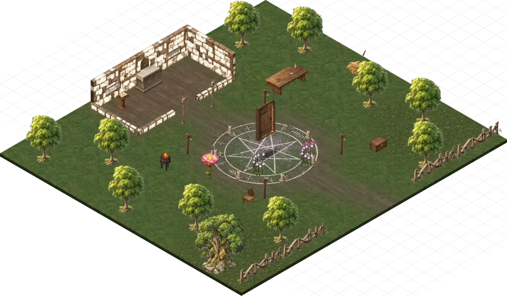
📍 ISO — 마을 의식터 (페이와일드로 가는 문)
Gamemaster:
마법진 위에 무언가 문이 하나 덜컥 놓여져 있는 곳을 봅니다
Troll:
"이 곳에다가 불쾌한 것을 설치해놓았지"
"그 때문에 우리의 축복이 늦어지지 말이네!"
"지금 정원사님꼐서"
"그 멍청한 결계를 없애고 계시네"
"금방 안남았다고 하시니 자네들도 운이 좋다면.."
"축복을 받겠지"
피아:
"....정원사 님의 목표는 결국 무엇인가요? 모두에게 축복을 내리는 것?"
Gamemaster > 희야:
그 안에 있는게 무엇이든... 당신에게 무척이나 무척이나 불쾌할 것 같다는 직감이 느껴집니다
"아프지 않았으면 좋겠다"
"온 세상이 꽃밭이었으면 좋겠다"
할다론 미스바르:
"문과 마법진은 다 여기에 있는데... 정원사는 어디에서 결계를 없애고 있는거지?"
할다론 미스바르:
"내부...? 문 안쪽을 말하는건가?"
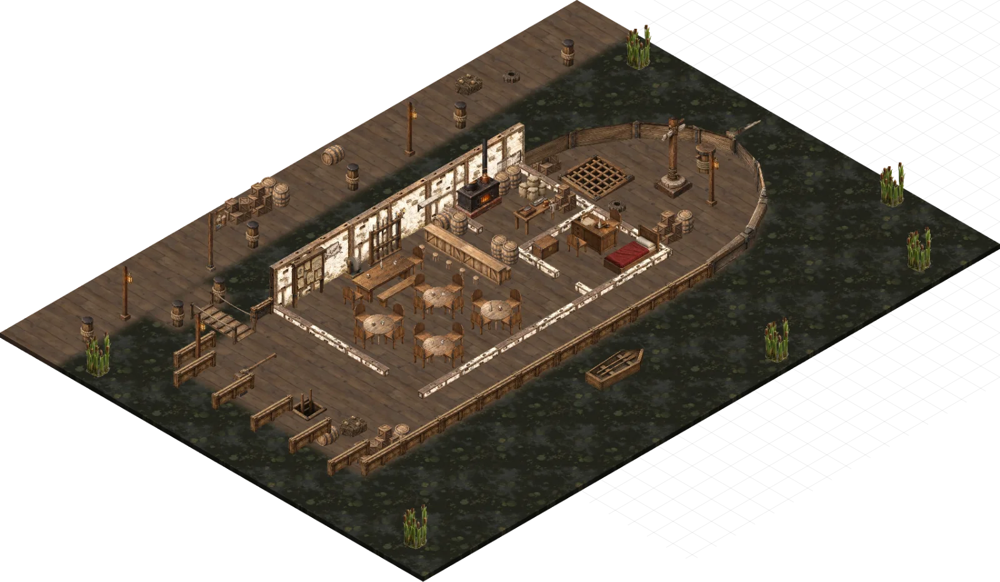
📍 ISO — 뉴 파티피플 갑판
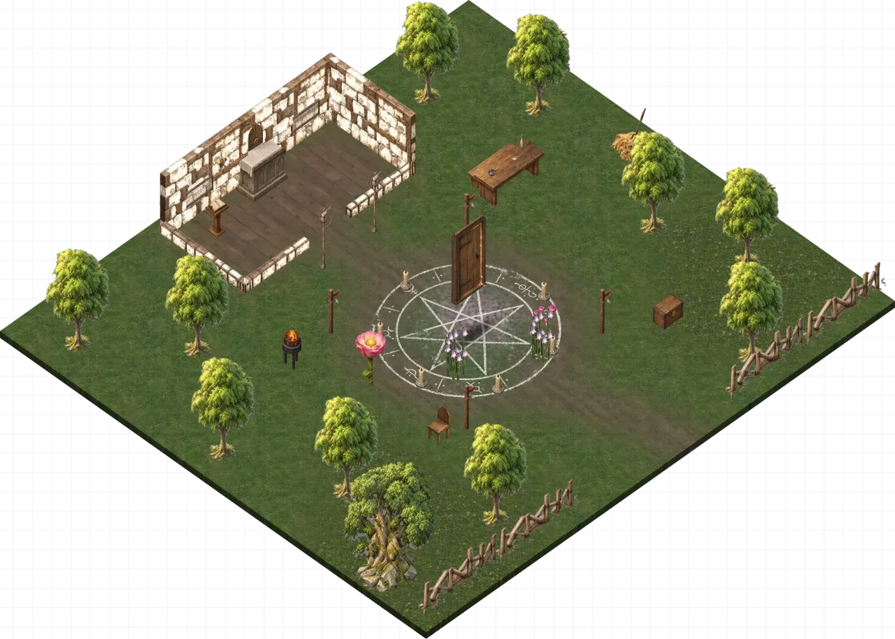
📍 ISO — 마을 의식터 (페이와일드로 가는 문)
"이런 과도한 생명력은... 물질계의 사람들에게는 오히려 고통일텐데요."
문을 엽니다
리리 펀치플러프:
"하지만 우리는 아픔을 통해서 성장하기도 하는 걸요."
그게 무엇이든
다른 세상이 펼쳐져 있을 것입니다
Troll:
"하지만 배고픈 것 보다는 낫지:"
"...이 안으로 들어가야 하는걸까요."
모드:
"... 그래야 보든, 뭐든 할 수 있을 것 같은걸요."
피아:
"...괜찮을지는 모르겠지만... 용기를 낼수 밖에 없겠네요."
할다론 미스바르:
"(내부를 쳐다보다 살짝 인상을 씁니다) 정원사를 만나는게 빠르겠군. 안으로 들어가도 문제없나?"
📍 ISO — 문 너머 높은 언덕 (화살성채가 보이는 곳)
Troll:
"자 정원사께서 자네들을 기다리네"
"존중하는 마음만 있다면 축복은 자네들 것"
📍 ISO — 마을 의식터 (페이와일드로 가는 문)
리리 펀치플러프:
(내키지 않지만 사람들을 따라 움직입니다
피아:
"...." 각오를 굳히고 앞으로 나아갑니다
할다론 미스바르:
"(불쾌함에 인상을 찌푸리더니 대답하지 않고 안으로 들어갑니다)"
📍 ISO — 문 너머 높은 언덕 (화살성채가 보이는 곳)
내레이터:
그러면 여러분은.... 내부로 들어갑니다
그러자.... 엄청나게 높은 곳이 나옵니다
저 멀리 원경이 아주 잘보이는 어떠한 곳
그리고 들어가자마자 할다론은 엄청난 불쾌감을 느낍니다
저 멀리 보이는 것은
화살성채로 보입니다. 그런데 그 근처에 꿈툴거리는 것들은..
엄청난 꽃밭입니다
내레이터:
저 넓은 땅이 전부 꽃밭이 펼쳐져 있습니다
산과 들을 덮을 정도로 엄청난 양입니다
위에서 보니깐 그 곷밭은
조금씩 움직이는 모습이 보입니다
피아:
"꽃밭이 오싹하게 느껴지는 건 처음이군요."
그 눈앞에 있는 의식은.....
할다론 미스바르:
"...(정신을 가다듬으려는 듯 작게 심호흡을 한다)"
내레이터:
바닥에는 인간의 살덩이 같은게 꿈툴거리고 있습니다
정체를 알 수 없는 역겨운 생명체가 말이죠
그리고 중앙에는..
지팡이를 들고 있는 어떤 남자가 서있스2ㅂ니다
그리고 그 남자의 앞에는 검은 마법진과 함께
사람의 목을 자른듯한 시체 하나가 무릎을 꿇고 있습니다
루크:
(나지막히)"여기가 원흉 중 하나인 것 같군요."
내레이터:
그리고 할다론은 이 의식을 아주 잘알고 있습니다
내레이터:
아주 오래 전에 이것과 같은 의식을 치르기 위해 친구가 죽었기 때문입니다
그리고 그 효과 역시 잘 알고 있습니다
주변 땅을 모조리 죽음의 땅으로 만들어버리는 여러 제물의 목숨을 바쳐야하는 흉측한 의식입니다
할다론 미스바르:
"......아니길 바랐는데"
Witherbloom Professor of Growth:
그러면 지팡이를 대고 있습니다
내레이터:
금방에서도 그 검은 의식에 엮여있는 결계가 깨질 것 처럼 보입니다
그리고 옆에있는 살덩이들이 그것만을 원하고 바라보고 있습니다
Flesh Clot:
"생명이다 생명이다!!!"
Witherbloom Professor of Growth:
"이 지면을 죽음의 땅으로 만드는 사악한 의식이여!"
할다론 미스바르:
앞에 있는 정원사가...할다론이 과거에 본적 있던...자인가요...?ㅋㅋㅋ 아
피아:
"....그 의식을 파괴하려 하시나요."
"그를 숭배하게나!"
할다론 미스바르:
"...너 이 의식을 어떻게 알아냈지?"
Witherbloom Professor of Growth:
"이 의식은 그 헤그들이 치르던 의식이다"
"우리들의 축복을 방해하기 위해 말이지"
"모두에게 영생을 나눠주는 것을 방해하고 있다!"
"우리들을 모두 죽이려는 나쁜 의식!"
피아:
"....정원사시여, 당신의 의도가 어떠한지 모르겠으나 이 땅의 과도한 생명력으로 외려 많은 이들이 고통받고 힘들어합니다."
Witherbloom Professor of Growth:
그러면 피아의 말을 듣지 않습니다 " 코린트의 영원한 삶을 모두에게!!!!!"
피아:
"영원한 것은 결국 영원하지 않은 것과 다른 바가 없으니...."
루크:
"당신들은 죽음을 부정하는 자들이군요."
"영생에 집착한 나머지"
"섭리를 부정하는 거나 마찬가지에요."
리리 펀치플러프:
"죽음을 피해 도망치는 것이 가능할 것 같아요? 영생? 세상 모든 것은 결국 죽어요."
Witherbloom Professor of Growth:
"자네들은.."
"코린트의 삶을 부정하고 이 끔찍한 의식을 옹호하는가?"
리리 펀치플러프:
"코린트가 원하는 바가 이런 방식은 아닐 것 같은데요?"
루크:
"이런 의식이 진행되더라도 코린트는 삶은 유지될겁니다."
"균형을 무너뜨리지 마세요"
Witherbloom Professor of Growth:
그,러면
옆에 있는 고깃덩어리들이
여러분을 노려봅니다
내레이터:
하나 확실한건 이 장소의 공기가 매섭고 무섭게 변했다는겁니다
Witherbloom Professor of Growth
Witherbloom Professor of Growth (1) 우선권
리리 펀치플러프:
Tandem Footwork 특성 우선권을 굴릴 때, 행동불능 상태가 아니라면 바드의 영감 사용 횟수 하나를 소모할 수 있습니다. 그렇게 할 때, 바드의 영감 주사위를 굴립니다. 당신과 당신을 보거나 들을 수 있는 30피트 이내의 동료들 각각은 굴린 수치만큼 우선권에 보너스를 얻습니다. 특수 1시간 자신 Emanation No Template
아
안보였네
ㅋㅋㅋㅋㅋ
⚔️ 전투 시작 — ISO — 문 너머 높은 언덕 (화살성채가 보이는 곳)
Flesh Clot, 할다론 미스바르, Flesh Clot, 모드, Flesh Clot, Flesh Clot, 닐라, 피아, 루크, Troll (1), 리리 펀치플러프, Witherbloom Professor of Growth (1), Groff (1), Assassin Vine (1), Groff (1)
루크:
(크기가 딱 파이어볼 떨어뜨리기 좋아보이는군요. 마침 면역도 6명까지
할다론 미스바르:
(이것...정말... 첫번째면..음...
루크:
(아, 근데 소환수들이 죄다 맞겠구나;;
리리 펀치플러프:
(오 알트 누르니까 이렇게 보이는군요
할다론 미스바르:
Hunter's Mark 1레벨 • 예지계 범위 내에 보이는 크리쳐 하나를 마법으로 표시하여 사냥감으로 삼습니다. 주문이 끝나기 전에 공격 굴림으로 대상에게 명중할 때마다 추가로 1d6 역장 피해를 입힙니다. 또한 대상을 찾기 위한 지혜 (감지) 또는 지혜 (생존술) 판정에 유리를 지닙니다. 주문이 끝나기 전에 대상의 HP가 0이 되면, 추가 행동을 취해 범위 내에 보이는 새로운 크리쳐로 표시를 이동시킬 수 있습니다. 고레벨 주문 슬롯 사용 시. 3~4레벨(최대 8시간) 또는 5레벨 이상(최대 24시간) 주문 슬롯으로 집중을 더 오래 유지할 수 있습니다.
Ancient Elven Lightning Longbow Basic weapon attack using this item's native weapon damage, range, mastery, and passive effects. 당신은 이 마법 무기로 하는 명중 굴림과 피해 굴림에 +2 보너스 를 얻습니다. 하루 3회, 궁수는 화살을 쏘는 대신 Lightning Bolt 주문을 3레벨으로 시전한다고 선언할 수 있습니다. Lightning Bolt 가 시전되면, 길이 100피트, 너비 5피트의 번개 줄기가 당신에게서 당신이 선택한 방향으로 뻗어나갑니다. 그 선 안의 각 크리처는 DC 16 민첩 내성 굴림을 해야 합니다. 실패하면 번개 피해 8d6 을 받고, 성공하면 그 절반만 받습니다. 번개는 착용하거나 운반 중이 아닌 범위 내의 가연성 물체에 불을 붙입니다. 이 주문을 사용하면 활 피해와 기본 1D8 피해는 사라지며, 적 또는 대상은 주문처럼 전체 8d6 피해를 받습니다. 장궁 숙련은 당신이 이 무기로 하는 모든 공격의 명중 굴림에 숙련 보너스를 더할 수 있게 해 줍니다.
Ancient Elven Lightning Longbow Basic weapon attack using this item's native weapon damage, range, mastery, and passive effects. 당신은 이 마법 무기로 하는 명중 굴림과 피해 굴림에 +2 보너스 를 얻습니다. 하루 3회, 궁수는 화살을 쏘는 대신 Lightning Bolt 주문을 3레벨으로 시전한다고 선언할 수 있습니다. Lightning Bolt 가 시전되면, 길이 100피트, 너비 5피트의 번개 줄기가 당신에게서 당신이 선택한 방향으로 뻗어나갑니다. 그 선 안의 각 크리처는 DC 16 민첩 내성 굴림을 해야 합니다. 실패하면 번개 피해 8d6 을 받고, 성공하면 그 절반만 받습니다. 번개는 착용하거나 운반 중이 아닌 범위 내의 가연성 물체에 불을 붙입니다. 이 주문을 사용하면 활 피해와 기본 1D8 피해는 사라지며, 적 또는 대상은 주문처럼 전체 8d6 피해를 받습니다. 장궁 숙련은 당신이 이 무기로 하는 모든 공격의 명중 굴림에 숙련 보너스를 더할 수 있게 해 줍니다.
(ㅠ
루크:
Innate Sorcery 특성 과거의 사건이 당신에게 지울 수 없는 흔적을 남겨 잠자고 있는 마법을 불어넣었습니다. 추가 행동으로 1분 동안 그 마법을 해방시킬 수 있으며, 그 동안 다음 이점을 얻습니다: 소서러 주문의 주문 내성 DC가 1 증가합니다. 시전하는 소서러 주문의 공격 굴림에 이점을 얻습니다. 이 특성을 두 번 사용할 수 있으며, 긴 휴식을 마치면 소모된 모든 사용 횟수를 회복합니다.
Fireball 4레벨 • 방출계 당신에게서 밝은 빛줄기가 범위 내에 선택한 지점으로 번쩍 날아가 낮은 굉음과 함께 화염 폭발로 피어납니다. 그 지점을 중심으로 한 반경 20피트 구체 내의 모든 크리처는 민첩 내성 굴림을 하여 실패 시 8d6 화염 피해를 받고, 성공 시 절반의 피해를 받습니다. 범위 내에서 착용하거나 들고 있지 않은 가연성 물체가 불붙기 시작합니다. 고레벨 주문 슬롯 사용 시. 3레벨 초과 주문 슬롯을 사용할 때마다 피해가 1d6씩 증가합니다.
강화 주문 — Empowered Spell Fireball · 소서리 포인트 1 소비 · 남은 7 재굴림. d6: 2 → 6 / d6: 1 → 5 / d6: 2 → 2 / d6: 1 → 5 피해 총합. 38
Flesh Clot:
Persistent Flesh 특성 피해로 HP가 0이 되었을 때 건강 DC 5+받은 피해 내성 굴림에 성공하면 HP 1이 됩니다. 광휘 피해나 치명타로 쓰러졌다면 작동하지 않습니다. 원본 좀비의 지속 특성을 살점의 축복으로 재해석했습니다.
루크:
Outer Essence Shard 선 정수: 주문에 메타매직을 쓴 직후 누른다. 자신 또는 보이는 30피트 이내 한 명에게 3d6 임시 HP. 소서러의 조율 필요. 외부 차원의 정수가 담긴 파편이다. 행동으로 무기나 장신구 같은 초소형 물건에 부착하거나 떼어낼 수 있다. 조율이 끝나면 떨어진다. 들고 있거나 착용하는 동안 주문시전 초점으로 사용할 수 있다. 획득 시 d4로 정수를 한 번 정한다: 1 질서, 2 혼돈, 3 선, 4 악. 이 파편을 들고 있거나 착용한 채 주문에 메타매직을 사용하면, 정해진 정수의 속성을 사용할 수 있다. 질서. 자신 또는 보이는 30피트 이내 크리처 하나에 걸린 매혹·실명·귀먹음·공포·중독·기절 중 상태 하나를 끝낸다. 혼돈. 그 주문으로 피해를 받은 크리처 하나를 고른다. 자신의 다음 턴 시작 전까지 그 대상의 공격 굴림과 능력치 판정에 불리점을 준다. 선. 자신 또는 보이는 30피트 이내 크리처 하나가 3d6 임시 HP를 얻는다. 기존 임시 HP와 더하지 않고 더 높은 값을 유지한다. 악. 그 주문으로 피해를 받은 크리처 하나에게 3d6 사령 피해를 추가로 준다.
Witherbloom Professor of Growth:
(뭐지
(이녀석 hp 벌써 왜이래
할다론 미스바르:
"...내가 이 의식이 끊기지 않게 싸워야 한다니 정말 심사가 꼬이는군"
"너누 맘에 안들어"
닐라:
Conjure Woodland Beings 4레벨 • 조형계 자연 정령들을 소환하여 지속 시간 동안 당신 주변 10피트 발산 범위 안에서 날아다닙니다. 발산 범위가 보이는 크리처의 공간에 진입할 때마다, 보이는 크리처가 발산 범위에 진입하거나 그곳에서 턴을 마칠 때마다 해당 크리처에게 지혜 내성 굴림을 강제할 수 있습니다. 실패 시 크리처는 5d8 역장 피해를 받고, 성공 시 절반의 피해를 받습니다. 크리처는 턴당 한 번만 이 주문의 영향을 받을 수 있습니다. 또한 주문의 지속시간 동안 Disengage 행동을 추가 행동으로 취할 수 있습니다. 고레벨 주문 슬롯 사용 시. 4레벨을 초과하는 슬롯 레벨마다 피해가 1d8씩 증가합니다.
Conjure Woodland Beings Conjure Woodland Beings: Damage 자연 정령들을 소환하여 지속 시간 동안 당신 주변 10피트 발산 범위 안에서 날아다닙니다. 발산 범위가 보이는 크리처의 공간에 진입할 때마다, 보이는 크리처가 발산 범위에 진입하거나 그곳에서 턴을 마칠 때마다 해당 크리처에게 지혜 내성 굴림을 강제할 수 있습니다. 실패 시 크리처는 5d8 역장 피해를 받고, 성공 시 절반의 피해를 받습니다. 크리처는 턴당 한 번만 이 주문의 영향을 받을 수 있습니다. 또한 주문의 지속시간 동안 Disengage 행동을 추가 행동으로 취할 수 있습니다. 고레벨 주문 슬롯 사용 시. 4레벨을 초과하는 슬롯 레벨마다 피해가 1d8씩 증가합니다.
?
(그 살리시면됩니당
닐라:
Conjure Woodland Beings Conjure Woodland Beings: Damage 자연 정령들을 소환하여 지속 시간 동안 당신 주변 10피트 발산 범위 안에서 날아다닙니다. 발산 범위가 보이는 크리처의 공간에 진입할 때마다, 보이는 크리처가 발산 범위에 진입하거나 그곳에서 턴을 마칠 때마다 해당 크리처에게 지혜 내성 굴림을 강제할 수 있습니다. 실패 시 크리처는 5d8 역장 피해를 받고, 성공 시 절반의 피해를 받습니다. 크리처는 턴당 한 번만 이 주문의 영향을 받을 수 있습니다. 또한 당신은 주문이 지속되는 동안 크리처와 대화하듯 정령들과 대화할 수 있습니다. 고레벨 주문 슬롯 사용 시. 4레벨 초과 주문 슬롯을 사용할 때마다 피해가 1d8씩 증가합니다.
Witherbloom Professor of Growth:
"생명의 힘을 다루는군!":
닐라:
"...이런 방식은 옳지 않아요. 자연은 순환해야 그 의미가 있는거라구요"
Witherbloom Professor of Growth:
"왜 우리를 이해 못하는거지?!"
Witherbloom Professor of Growth:
뭐지
여러분 잠깐만요
Witherbloom Professor of Growth:
뭔가 주변에서 타는 냄새나서
Witherbloom Professor of Growth:
잠깐만 둘러보고 오겠음
Assassin Vine > Gamemaster:
ActivitiesConstrictConstricted Poison
닐라
Preserved Land — 닐라 임시 HP
Witherbloom Professor of Growth:
누가 담배 태우는듯
리리 펀치플러프:
별 일 아니라면 다행입니다..
Assassin Vine:
Constrict 특성 명중 +7, 사정거리 20피트, 크리처 하나. 명중 시 2d6+4 타격 피해를 주고 붙잡는다(탈출 DC 14). 붙잡힌 동안 대상은 구속되고 자기 턴 시작마다 6d6 독 피해를 받는다. 한 번에 한 대상만 Constrict할 수 있다. 반복 피해 버튼은 붙잡힌 대상의 턴 시작에만 사용한다.
근데....치유의 권능 탓인지
그 상처부위가 이상하게 변형되기 시작합니다
그것이 오히려...
닐라:
Conjure Woodland Beings Conjure Woodland Beings: Damage 자연 정령들을 소환하여 지속 시간 동안 당신 주변 10피트 발산 범위 안에서 날아다닙니다. 발산 범위가 보이는 크리처의 공간에 진입할 때마다, 보이는 크리처가 발산 범위에 진입하거나 그곳에서 턴을 마칠 때마다 해당 크리처에게 지혜 내성 굴림을 강제할 수 있습니다. 실패 시 크리처는 5d8 역장 피해를 받고, 성공 시 절반의 피해를 받습니다. 크리처는 턴당 한 번만 이 주문의 영향을 받을 수 있습니다. 또한 당신은 주문이 지속되는 동안 크리처와 대화하듯 정령들과 대화할 수 있습니다. 고레벨 주문 슬롯 사용 시. 4레벨 초과 주문 슬롯을 사용할 때마다 피해가 1d8씩 증가합니다.
피아:
"이 힘이... 이 생명력에도 먹힐지는 모르겠지만..."
침묵의 처형인 Draw out the horrors bound in the blade and wear the torturer's face for 1 hour: Strength score +2, advantage on Charisma (Intimidation) checks, and melee hits execute creatures at 15 HP or fewer. 두 동강 난 처형인의 대검을 조각째 되불에 넣어 벼려 낸 양손검. 같은 종류의 무기보다 터무니없이 무겁고 다루기 사납습니다. 근력 18 이상 인 크리처만 불리점 없이 휘두를 수 있습니다. 이 무기로 하는 공격 및 피해 굴림에 +2 보너스 를 받습니다. 고문자의 형상. 긴 휴식마다 한 번, 보너스 행동으로 칼날 속에 갇힌 참상을 끌어내 고문자의 얼굴을 뒤집어쓸 수 있습니다. 1시간 동안 근력 수치가 2 증가 하며 매력(위협) 판정에 이점 을 얻습니다. 또한 그동안 히트 포인트가 15 이하인 크리처를 근접 공격으로 명중시키면 그 크리처는 즉시 죽습니다 . 저주. 매일 밤, 소리 없이 우뚝 선 형체가 당신의 생기를 빨아 가는 꿈을 꿉니다. 그때마다 DC 15 지혜 내성 굴림 을 굴려, 실패하면 새벽에 2d8 정신 피해를 입습니다. 이 피해는 어떤 수단으로도 줄일 수 없습니다.
(변신~
Gamemaster:
그러면 서걱 서걱 다썰고다니는
피아의 처형모드
리리 펀치플러프:
(영생을 꿈꾸는 자들에게 성큼 다가온 처형의 칼날
피아:
@그리고 변신한채로 살짝 뒤로 빠졌다가 들이박습니다
Barge Helm Use after moving at least 20 feet in a straight line toward a target immediately before successfully shoving it. 이 납작하고 투박한 투구는 당신이 목표를 향해 정면으로 돌진해 마음껏 들이받아 넘어뜨릴 수 있게 해 줍니다. 대상을 성공적으로 밀치기 직전에 그 대상을 향해 직선으로 최소 20피트 이동했다면, 대상은 투구에 들이받힌 충격으로 1d6 타격 피해를 받습니다.
피아:
침묵의 처형인 Basic weapon attack using this item's native weapon damage, mastery, and passive effects. 두 동강 난 처형인의 대검을 조각째 되불에 넣어 벼려 낸 양손검. 같은 종류의 무기보다 터무니없이 무겁고 다루기 사납습니다. 근력 18 이상 인 크리처만 불리점 없이 휘두를 수 있습니다. 이 무기로 하는 공격 및 피해 굴림에 +2 보너스 를 받습니다. 고문자의 형상. 긴 휴식마다 한 번, 보너스 행동으로 칼날 속에 갇힌 참상을 끌어내 고문자의 얼굴을 뒤집어쓸 수 있습니다. 1시간 동안 근력 수치가 2 증가 하며 매력(위협) 판정에 이점 을 얻습니다. 또한 그동안 히트 포인트가 15 이하인 크리처를 근접 공격으로 명중시키면 그 크리처는 즉시 죽습니다 . 저주. 매일 밤, 소리 없이 우뚝 선 형체가 당신의 생기를 빨아 가는 꿈을 꿉니다. 그때마다 DC 15 지혜 내성 굴림 을 굴려, 실패하면 새벽에 2d8 정신 피해를 입습니다. 이 피해는 어떤 수단으로도 줄일 수 없습니다.
Savage Attacker 특성 특히 큰 피해를 주는 공격을 훈련했습니다. 무기로 대상을 명중시킬 때 턴당 한 번, 무기의 피해 주사위를 두 번 굴려 둘 중 하나를 선택하여 대상에게 적용할 수 있습니다.
침묵의 처형인 Basic weapon attack using this item's native weapon damage, mastery, and passive effects. 두 동강 난 처형인의 대검을 조각째 되불에 넣어 벼려 낸 양손검. 같은 종류의 무기보다 터무니없이 무겁고 다루기 사납습니다. 근력 18 이상 인 크리처만 불리점 없이 휘두를 수 있습니다. 이 무기로 하는 공격 및 피해 굴림에 +2 보너스 를 받습니다. 고문자의 형상. 긴 휴식마다 한 번, 보너스 행동으로 칼날 속에 갇힌 참상을 끌어내 고문자의 얼굴을 뒤집어쓸 수 있습니다. 1시간 동안 근력 수치가 2 증가 하며 매력(위협) 판정에 이점 을 얻습니다. 또한 그동안 히트 포인트가 15 이하인 크리처를 근접 공격으로 명중시키면 그 크리처는 즉시 죽습니다 . 저주. 매일 밤, 소리 없이 우뚝 선 형체가 당신의 생기를 빨아 가는 꿈을 꿉니다. 그때마다 DC 15 지혜 내성 굴림 을 굴려, 실패하면 새벽에 2d8 정신 피해를 입습니다. 이 피해는 어떤 수단으로도 줄일 수 없습니다.
피아 > Gamemaster:
RecoverySavage Attacker 사용 횟수+1
꿈툴꿈툴 기어와 모드를 노립니다
Slam 특성 +3, 도달 5ft. 적중 4(1d6+1) 타격.
Groff > Gamemaster:
ActivitiesSwamp ClawEngulfed Poison
Groff:
Bite 특성 명중 +7, 사정거리 5피트, 대상 하나. 명중 시 1d8+5 관통 피해.
Swamp Claw 특성 명중 +7, 사정거리 5피트, 대상 하나. 명중 시 1d6+5 참격 피해. 중형 이하 대상은 DC 15 근력 내성 실패 시 삼켜진다. 삼켜진 대상은 숨을 쉬지 못하고 구속되며, 자기 턴 시작마다 3d6 독 피해를 받는다. Groff가 움직이면 함께 이동한다. 한 번에 한 대상만 삼킬 수 있다. 대상은 자기 턴 종료마다 같은 근력 내성을 반복해 성공하면 가장 가까운 빈 공간으로 탈출한다. 내성·반복 피해 버튼은 해당 시점에만 사용한다.
그러면 리리를 꼴딱 삼킵니다
Flame Blade 4레벨 • 방출계 You evoke a fiery blade in your free hand. The blade is similar in size and shape to a scimitar, and it lasts for the duration. If you let go of the blade, it disappears, but you can evoke it again as a Bonus Action. As a Magic action, you can make a melee spell attack with the fiery blade. On a hit, the target takes Fire damage equal to 3d6 plus your spellcasting ability modifier. The flaming blade sheds Bright Light in a 10-foot radius and Dim Light for an additional 10 feet. Using a Higher-Level Spell Slot. The damage increases by 1d6 for each spell slot level above 2.
내레이터:
그 과잉발산된 축복이 당신의 살을 문드러지게만듭니다
리리 펀치플러프:
Wizards' Cards Same bonus action draws up to2 cards with available hands. Roll/record each separately and resolve any intermediate bust before drawing further; do not bypass the first card exceeding21. Last card drawn has50-percent deck destruction risk. 이 playing card set은 air, earth, 화염, water라는 네 unique suits에 걸친 다양한 cards로 이루어진 부분적인 deck입니다. 각 suit에는 ace, 2 through 10, 그리고 최소 두 장의 face cards가 있습니다(face cards는 때때로 더 자주 나타나기도 합니다). 손이 충분하다면, 당신은 추가 행동으로 deck에서 최대 2 cards를 draw할 수 있습니다. 그렇게 하면 cards가 잠시 glow한 뒤 사라집니다. draw한 각 card마다 d4와 d12를 굴립니다. card의 suit는 d4로 결정되며, 이는 피해 type과 연결됩니다. air(1, lightning), earth(2, thunder), 화염(3, 화염), water(4, cold)입니다. card의 종류는 d12로 결정됩니다. ace(1), 2 through 10(2-10), 또는 face card(11-12)입니다. card를 draw할 때 그 suit와 value를 기록합니다. 2 through 10의 value는 숫자와 같고, face card의 value는 10이며, ace는 1 또는 11 중 하나가 될 수 있습니다(각 draw 때 당신이 선택). draw한 각 card의 suit와 value는 손바닥이나 손등 중 당신이 선택한 곳에 마법적으로 표시됩니다. cards를 draw한 뒤 어느 시점이든 행동으로 모든 drawn cards 안에 저장된 마법을 방출할 수 있습니다. 그렇게 하면 cards가 다시 materialize되어 당신이 볼 수 있고 30피트 내에 있는 크리처 하나를 향해 날아갑니다. 대상은 DC 13 민첩 내성 굴림을 해야 하며, 실패하면 cards의 total과 같은 피해를 받습니다. cards의 total이 21이라면 대상은 내성 굴림에 불리점을 받습니다. 피해 type은 당신이 선택하며, drawn cards의 suits 중 적어도 하나와 연결된 type이어야 합니다. 현재 drawn cards의 total value가 21을 넘게 되면, deck은 마법의 explosion을 방출합니다. 당신과 deck에서 5피트 내의 다른 모든 크리처는 DC 13 민첩 내성 굴림을 해야 합니다. 실패하면 22 피해를 받고, 성공하면 절반의 피해를 받습니다. 피해 type을 결정하려면 위 규칙을 사용해 d4를 굴립니다. 현재 drawn cards는 그 안의 마법을 방출하거나, deck이 폭발하거나, short 또는 긴 휴식을 마치면 사라집니다. 발견했을 때 deck에는 2d20 + 10 장의 random cards가 들어 있습니다. deck은 매일 새벽 사용한 cards를 random으로 1d10 장 회복하며, 최대 52 cards까지 회복합니다. deck의 마지막 card를 draw하면, deck이 파괴될 50% chance가 있습니다.
Wizards' Cards Same bonus action draws up to2 cards with available hands. Roll/record each separately and resolve any intermediate bust before drawing further; do not bypass the first card exceeding21. Last card drawn has50-percent deck destruction risk. 이 playing card set은 air, earth, 화염, water라는 네 unique suits에 걸친 다양한 cards로 이루어진 부분적인 deck입니다. 각 suit에는 ace, 2 through 10, 그리고 최소 두 장의 face cards가 있습니다(face cards는 때때로 더 자주 나타나기도 합니다). 손이 충분하다면, 당신은 추가 행동으로 deck에서 최대 2 cards를 draw할 수 있습니다. 그렇게 하면 cards가 잠시 glow한 뒤 사라집니다. draw한 각 card마다 d4와 d12를 굴립니다. card의 suit는 d4로 결정되며, 이는 피해 type과 연결됩니다. air(1, lightning), earth(2, thunder), 화염(3, 화염), water(4, cold)입니다. card의 종류는 d12로 결정됩니다. ace(1), 2 through 10(2-10), 또는 face card(11-12)입니다. card를 draw할 때 그 suit와 value를 기록합니다. 2 through 10의 value는 숫자와 같고, face card의 value는 10이며, ace는 1 또는 11 중 하나가 될 수 있습니다(각 draw 때 당신이 선택). draw한 각 card의 suit와 value는 손바닥이나 손등 중 당신이 선택한 곳에 마법적으로 표시됩니다. cards를 draw한 뒤 어느 시점이든 행동으로 모든 drawn cards 안에 저장된 마법을 방출할 수 있습니다. 그렇게 하면 cards가 다시 materialize되어 당신이 볼 수 있고 30피트 내에 있는 크리처 하나를 향해 날아갑니다. 대상은 DC 13 민첩 내성 굴림을 해야 하며, 실패하면 cards의 total과 같은 피해를 받습니다. cards의 total이 21이라면 대상은 내성 굴림에 불리점을 받습니다. 피해 type은 당신이 선택하며, drawn cards의 suits 중 적어도 하나와 연결된 type이어야 합니다. 현재 drawn cards의 total value가 21을 넘게 되면, deck은 마법의 explosion을 방출합니다. 당신과 deck에서 5피트 내의 다른 모든 크리처는 DC 13 민첩 내성 굴림을 해야 합니다. 실패하면 22 피해를 받고, 성공하면 절반의 피해를 받습니다. 피해 type을 결정하려면 위 규칙을 사용해 d4를 굴립니다. 현재 drawn cards는 그 안의 마법을 방출하거나, deck이 폭발하거나, short 또는 긴 휴식을 마치면 사라집니다. 발견했을 때 deck에는 2d20 + 10 장의 random cards가 들어 있습니다. deck은 매일 새벽 사용한 cards를 random으로 1d10 장 회복하며, 최대 52 cards까지 회복합니다. deck의 마지막 card를 draw하면, deck이 파괴될 50% chance가 있습니다.
Wizards' Cards Draw one or two cards as a Bonus Action. Each card rolls d4 for suit (1 air/lightning, 2 earth/thunder, 3 fire, 4 water/cold) and d12 for value (ace 1 = 1 or 11 your choice, 2-10 face value, 11-12 = 10). The drawn cards, running total, and available damage types are tracked on the deck until you release them, the deck explodes, or you finish a short or long rest. 이 playing card set은 air, earth, 화염, water라는 네 unique suits에 걸친 다양한 cards로 이루어진 부분적인 deck입니다. 각 suit에는 ace, 2 through 10, 그리고 최소 두 장의 face cards가 있습니다(face cards는 때때로 더 자주 나타나기도 합니다). 손이 충분하다면, 당신은 추가 행동으로 deck에서 최대 2 cards를 draw할 수 있습니다. 그렇게 하면 cards가 잠시 glow한 뒤 사라집니다. draw한 각 card마다 d4와 d12를 굴립니다. card의 suit는 d4로 결정되며, 이는 피해 type과 연결됩니다. air(1, lightning), earth(2, thunder), 화염(3, 화염), water(4, cold)입니다. card의 종류는 d12로 결정됩니다. ace(1), 2 through 10(2-10), 또는 face card(11-12)입니다. card를 draw할 때 그 suit와 value를 기록합니다. 2 through 10의 value는 숫자와 같고, face card의 value는 10이며, ace는 1 또는 11 중 하나가 될 수 있습니다(각 draw 때 당신이 선택). draw한 각 card의 suit와 value는 손바닥이나 손등 중 당신이 선택한 곳에 마법적으로 표시됩니다. cards를 draw한 뒤 어느 시점이든 행동으로 모든 drawn cards 안에 저장된 마법을 방출할 수 있습니다. 그렇게 하면 cards가 다시 materialize되어 당신이 볼 수 있고 30피트 내에 있는 크리처 하나를 향해 날아갑니다. 대상은 DC 13 민첩 내성 굴림을 해야 하며, 실패하면 cards의 total과 같은 피해를 받습니다. cards의 total이 21이라면 대상은 내성 굴림에 불리점을 받습니다. 피해 type은 당신이 선택하며, drawn cards의 suits 중 적어도 하나와 연결된 type이어야 합니다. 현재 drawn cards의 total value가 21을 넘게 되면, deck은 마법의 explosion을 방출합니다. 당신과 deck에서 5피트 내의 다른 모든 크리처는 DC 13 민첩 내성 굴림을 해야 합니다. 실패하면 22 피해를 받고, 성공하면 절반의 피해를 받습니다. 피해 type을 결정하려면 위 규칙을 사용해 d4를 굴립니다. 현재 drawn cards는 그 안의 마법을 방출하거나, deck이 폭발하거나, short 또는 긴 휴식을 마치면 사라집니다. 발견했을 때 deck에는 2d20 + 10 장의 random cards가 들어 있습니다. deck은 매일 새벽 사용한 cards를 random으로 1d10 장 회복하며, 최대 52 cards까지 회복합니다. deck의 마지막 card를 draw하면, deck이 파괴될 50% chance가 있습니다.
Wizards' Cards: 불 (Fire) 에이스 (11), 불 (Fire) 9 카드 뽑기 뽑은 카드 합계 20 · 사용 가능한 피해 유형: 화염 . 방출 시 피해 유형 선택창에서 뽑은 문양에 해당하는 유형을 고르십시오.
모드:
(일단 저 무시무시한 6d6 독뎀을 없애드릴게요)
Blight 4레벨 • 사령계 범위 내에 보이는 크리처는 건강 내성 굴림을 하여 실패 시 8d8 부식 피해를 받고, 성공 시 절반의 피해를 받습니다. 식물 크리처는 자동으로 내성에 실패합니다. 대안으로, 나무나 덤불 같이 크리처가 아닌 비마법적 식물을 대상으로 할 수 있습니다. 내성 굴림 없이 단순히 시들어 죽습니다. 고레벨 주문 슬롯 사용 시. 4레벨 초과 주문 슬롯을 사용할 때마다 피해가 1d8씩 증가합니다.
"꺄아아아아아악!!!"
Troll > Gamemaster:
ActivitiesRegenerationRegeneration
모드:
(닐라 턴 오기전에 누가 뭔가 해 주겠지)
Troll:
Bite 자연 명중 +7, 사정거리 5피트, 대상 하나. 명중 시 1d6+4 관통 피해.
Troll:
Claw 자연 명중 +7, 사정거리 5피트, 대상 하나. 명중 시 2d6+4 참격 피해.
Claw 자연 명중 +7, 사정거리 5피트, 대상 하나. 명중 시 2d6+4 참격 피해.
Witherbloom Professor of Growth (1)의 턴!
Witherbloom Professor of Growth:
"모두 회복할 지어다!!!"
루크:
Counterspell 3레벨 • 방호계 크리처가 주문을 시전하는 것을 방해하려 합니다. 크리처는 건강 내성 굴림을 합니다. 실패하면 주문이 효과 없이 소산되며, 시전에 사용된 행동, 추가 행동, 또는 반응이 낭비됩니다. 해당 주문이 주문 슬롯으로 시전된 경우 슬롯은 소모되지 않습니다.
할다론 미스바르:
(카운터스펠 이펙트 멋지네요
Witherbloom Professor of Growth
Witherbloom Professor of Growth:
그러면
Witherbloom Professor of Growth:
주문이 막힙니다
루크:
Absorb Spells 특성 당신은 Counterspell 주문을 항상 준비한 상태로 유지한다. 또한 당신이 시전한 Counterspell 에 대상이 내성 굴림에 실패할 때마다, 당신은 소서리 포인트 1d4를 회복한다.
할다론 미스바르:
(아 매스 큐어 운즈였군여...
루크:
Absorb Spells 특성 당신은 Counterspell 주문을 항상 준비한 상태로 유지한다. 또한 당신이 시전한 Counterspell 에 대상이 내성 굴림에 실패할 때마다, 당신은 소서리 포인트 1d4를 회복한다.
Witherbloom Professor of Growth:
Summon Nature's Avatar 특성 짧거나 긴 휴식 후 재충전. 60피트 이내 빈 공간에 Groff 하나를 소환한다. 소환수는 아군이며 치료사 바로 다음에 턴을 가진다. 치료사는 소환수가 남아 있는 동안 텔레파시로 소통할 수 있다. 소환수는 10분 후, 소환수 또는 치료사가 죽었을 때, 또는 치료사가 행동으로 해산했을 때 사라진다. 기존에 배치된 Groff는 이 능력의 소환수가 아니다. 우선권과 소멸 조건은 GM이 관리한다.
닐라:
Conjure Woodland Beings Conjure Woodland Beings: Damage 자연 정령들을 소환하여 지속 시간 동안 당신 주변 10피트 발산 범위 안에서 날아다닙니다. 발산 범위가 보이는 크리처의 공간에 진입할 때마다, 보이는 크리처가 발산 범위에 진입하거나 그곳에서 턴을 마칠 때마다 해당 크리처에게 지혜 내성 굴림을 강제할 수 있습니다. 실패 시 크리처는 5d8 역장 피해를 받고, 성공 시 절반의 피해를 받습니다. 크리처는 턴당 한 번만 이 주문의 영향을 받을 수 있습니다. 또한 당신은 주문이 지속되는 동안 크리처와 대화하듯 정령들과 대화할 수 있습니다. 고레벨 주문 슬롯 사용 시. 4레벨 초과 주문 슬롯을 사용할 때마다 피해가 1d8씩 증가합니다.
Groff:
Bite 특성 명중 +7, 사정거리 5피트, 대상 하나. 명중 시 1d8+5 관통 피해.
닐라 > Gamemaster:
DC 10 집중 굴림집중 굴림
Groff:
Swamp Claw 특성 명중 +7, 사정거리 5피트, 대상 하나. 명중 시 1d6+5 참격 피해. 중형 이하 대상은 DC 15 근력 내성 실패 시 삼켜진다. 삼켜진 대상은 숨을 쉬지 못하고 구속되며, 자기 턴 시작마다 3d6 독 피해를 받는다. Groff가 움직이면 함께 이동한다. 한 번에 한 대상만 삼킬 수 있다. 대상은 자기 턴 종료마다 같은 근력 내성을 반복해 성공하면 가장 가까운 빈 공간으로 탈출한다. 내성·반복 피해 버튼은 해당 시점에만 사용한다.
닐라 > Gamemaster:
DC 10 집중 굴림집중 굴림
Groff:
근데 덩쿨에 묶여있어서 삼켜지지는 않겠네요
닐라:
Conjure Woodland Beings Conjure Woodland Beings: Damage 자연 정령들을 소환하여 지속 시간 동안 당신 주변 10피트 발산 범위 안에서 날아다닙니다. 발산 범위가 보이는 크리처의 공간에 진입할 때마다, 보이는 크리처가 발산 범위에 진입하거나 그곳에서 턴을 마칠 때마다 해당 크리처에게 지혜 내성 굴림을 강제할 수 있습니다. 실패 시 크리처는 5d8 역장 피해를 받고, 성공 시 절반의 피해를 받습니다. 크리처는 턴당 한 번만 이 주문의 영향을 받을 수 있습니다. 또한 당신은 주문이 지속되는 동안 크리처와 대화하듯 정령들과 대화할 수 있습니다. 고레벨 주문 슬롯 사용 시. 4레벨 초과 주문 슬롯을 사용할 때마다 피해가 1d8씩 증가합니다.
Flesh Clot:
Persistent Flesh 특성 피해로 HP가 0이 되었을 때 건강 DC 5+받은 피해 내성 굴림에 성공하면 HP 1이 됩니다. 광휘 피해나 치명타로 쓰러졌다면 작동하지 않습니다. 원본 좀비의 지속 특성을 살점의 축복으로 재해석했습니다.
Groff > Gamemaster:
ActivitiesSwamp ClawEngulfed Poison
닐라:
Conjure Woodland Beings Conjure Woodland Beings: Damage 자연 정령들을 소환하여 지속 시간 동안 당신 주변 10피트 발산 범위 안에서 날아다닙니다. 발산 범위가 보이는 크리처의 공간에 진입할 때마다, 보이는 크리처가 발산 범위에 진입하거나 그곳에서 턴을 마칠 때마다 해당 크리처에게 지혜 내성 굴림을 강제할 수 있습니다. 실패 시 크리처는 5d8 역장 피해를 받고, 성공 시 절반의 피해를 받습니다. 크리처는 턴당 한 번만 이 주문의 영향을 받을 수 있습니다. 또한 당신은 주문이 지속되는 동안 크리처와 대화하듯 정령들과 대화할 수 있습니다. 고레벨 주문 슬롯 사용 시. 4레벨 초과 주문 슬롯을 사용할 때마다 피해가 1d8씩 증가합니다.
Groff:
Bite 특성 명중 +7, 사정거리 5피트, 대상 하나. 명중 시 1d8+5 관통 피해.
Swamp Claw 특성 명중 +7, 사정거리 5피트, 대상 하나. 명중 시 1d6+5 참격 피해. 중형 이하 대상은 DC 15 근력 내성 실패 시 삼켜진다. 삼켜진 대상은 숨을 쉬지 못하고 구속되며, 자기 턴 시작마다 3d6 독 피해를 받는다. Groff가 움직이면 함께 이동한다. 한 번에 한 대상만 삼킬 수 있다. 대상은 자기 턴 종료마다 같은 근력 내성을 반복해 성공하면 가장 가까운 빈 공간으로 탈출한다. 내성·반복 피해 버튼은 해당 시점에만 사용한다.
Gamemaster:
(저 우드랜드 비잉 뭐길래 저렇게 썌지
(로커스트스웜이 따로없네
할다론 미스바르:
Hunter's Mark Hunter's Mark: Move 범위 내에 보이는 크리쳐 하나를 마법으로 표시하여 사냥감으로 삼습니다. 주문이 끝나기 전에 공격 굴림으로 대상에게 명중할 때마다 추가로 1d6 역장 피해를 입힙니다. 또한 대상을 찾기 위한 지혜 (감지) 또는 지혜 (생존술) 판정에 유리를 지닙니다. 주문이 끝나기 전에 대상의 HP가 0이 되면, 추가 행동을 취해 범위 내에 보이는 새로운 크리쳐로 표시를 이동시킬 수 있습니다. 고레벨 주문 슬롯 사용 시. 3~4레벨(최대 8시간) 또는 5레벨 이상(최대 24시간) 주문 슬롯으로 집중을 더 오래 유지할 수 있습니다.
Lightning Bolt 3레벨 • 방출계 A stroke of lightning forming a 100-foot-long, 5-foot-wide Line blasts out from you in a direction you choose. Each creature in the Line makes a Dexterity saving throw, taking 8d6 Lightning damage on a failed save or half as much damage on a successful one. Using a Higher-Level Spell Slot. The damage increases by 1d6 for each spell slot level above 3.
닐라
Preserved Land — 할다론 미스바르 임시 HP
모두 쓸어버리기로 결정했군요
루크:
Careful Spell 마법변형 옵션 비용: 소서리 포인트 1개 다른 크리처들이 내성 굴림을 해야 하는 주문을 시전할 때, 일부 크리처들을 주문의 완전한 힘으로부터 보호할 수 있습니다. 그러려면 소서리 포인트 1개를 소모하고 매력 수정치만큼(최소 1마리)의 크리처를 선택합니다. 선택된 크리처는 그 주문에 대한 내성 굴림에 자동으로 성공하며, 성공 시 절반의 피해를 받는 경우 피해를 전혀 받지 않습니다. 보호할 수 있는 크리처 수: 6
Spellfire Storm 4레벨 • 방출계 사거리 내 한 지점을 중심으로 반경 20피트, 높이 20피트의 원기둥(Cylinder) 안에 스펠파이어 기둥을 소환한다. 원기둥 내부는 밝은 빛으로 채워지며, 원기둥이 나타날 때 내부의 각 크리처는 건강 내성 굴림을 해야 한다. 실패 시 4d10점의 광휘(Radiant) 피해를 받고, 성공 시 절반만 받는다. 또크리처 하나이 해당 턴에 처음으로 주문 범위에 진입하거나, 그 안에서 턴을 종료할 때도 동일한 내성을 해야 한다. 한 턴에 한 번만 내성을 할 수 있다. 또한 원기둥 내의 크리처가 주문을 시전하려 할 때마다, 해당 크리처는 건강 내성 굴림을 해야 한다. 실패 시 주문은 효과 없이 사라지고, 시전에 사용한 행동, 부가 행동 또는 반응행동이 낭비된다. 주문 슬롯으로 시전한 경우 슬롯은 소진되지 않는다. 이 주문을 시전할 때, 영향을 받지 않을 크리처를 지정할 수 있다. 서클 주문으로 시전. 주문의 일반 구성요소 외에도, 특수 재료(가치 25,000GP 이상의 파란 별 사파이어)를 제공해야 하며, 이 재료는 주문이 소비한다. 주문 사거리가 1마일로 증가하며, 집중(Concentration)이 필요 없게 된다. 주문 시전 시 각 보조 시전자는 3레벨 이상의 주문 슬롯을 소진해야 하며, 그렇지 않으면 주문이 실패한다. 상위 주문 슬롯 사용. 4슬롯 위의 레벨마다 피해가 1d10씩 증가한다. 보조 시전자 수에 따라 주문의 효과 범위와 지속시간이 아래 표와 같이 결정된다. 이 시전에 참여한 시전자 중 누군가가 Spellfire Storm 을 또 다른 서클 주문으로 시전하는 데 기여하면 주문이 조기 종료된다. 보조 시전자 수 효과 범위 지속시간 1–3 반경 40피트, 높이 40피트 원기둥 1시간 4–6 반경 60피트, 높이 60피트 원기둥 8시간 7+ 반경 100피트, 높이 100피트 원기둥 24시간
루크:
Outer Essence Shard 선 정수: 주문에 메타매직을 쓴 직후 누른다. 자신 또는 보이는 30피트 이내 한 명에게 3d6 임시 HP. 소서러의 조율 필요. 외부 차원의 정수가 담긴 파편이다. 행동으로 무기나 장신구 같은 초소형 물건에 부착하거나 떼어낼 수 있다. 조율이 끝나면 떨어진다. 들고 있거나 착용하는 동안 주문시전 초점으로 사용할 수 있다. 획득 시 d4로 정수를 한 번 정한다: 1 질서, 2 혼돈, 3 선, 4 악. 이 파편을 들고 있거나 착용한 채 주문에 메타매직을 사용하면, 정해진 정수의 속성을 사용할 수 있다. 질서. 자신 또는 보이는 30피트 이내 크리처 하나에 걸린 매혹·실명·귀먹음·공포·중독·기절 중 상태 하나를 끝낸다. 혼돈. 그 주문으로 피해를 받은 크리처 하나를 고른다. 자신의 다음 턴 시작 전까지 그 대상의 공격 굴림과 능력치 판정에 불리점을 준다. 선. 자신 또는 보이는 30피트 이내 크리처 하나가 3d6 임시 HP를 얻는다. 기존 임시 HP와 더하지 않고 더 높은 값을 유지한다. 악. 그 주문으로 피해를 받은 크리처 하나에게 3d6 사령 피해를 추가로 준다.
Sacred Flame 방출계 불꽃 같은 광휘가 범위 내에 당신이 볼 수 있는 크리처에게 내려옵니다. 대상은 민첩 내성 굴림에 성공해야 하며 실패하면 1d8 광휘 피해를 받습니다. 이 내성 굴림에서는 반엄폐나 3/4 엄폐로 인한 이점을 받지 못합니다. Cantrip Upgrade. 피해는 5레벨(2d8), 11레벨(3d8), 17레벨(4d8)에 도달할 때마다 1d8씩 증가합니다.
(굴려서 그런듯
닐라:
Conjure Woodland Beings 4레벨 • 조형계 자연 정령들을 소환하여 지속 시간 동안 당신 주변 10피트 발산 범위 안에서 날아다닙니다. 발산 범위가 보이는 크리처의 공간에 진입할 때마다, 보이는 크리처가 발산 범위에 진입하거나 그곳에서 턴을 마칠 때마다 해당 크리처에게 지혜 내성 굴림을 강제할 수 있습니다. 실패 시 크리처는 5d8 역장 피해를 받고, 성공 시 절반의 피해를 받습니다. 크리처는 턴당 한 번만 이 주문의 영향을 받을 수 있습니다. 또한 주문의 지속시간 동안 Disengage 행동을 추가 행동으로 취할 수 있습니다. 고레벨 주문 슬롯 사용 시. 4레벨을 초과하는 슬롯 레벨마다 피해가 1d8씩 증가합니다. Concentration 음 및 동 Action 10분 자신
아 근데
10피트밖에 안되는구나 저거
닐라:
Conjure Woodland Beings Conjure Woodland Beings: Damage 자연 정령들을 소환하여 지속 시간 동안 당신 주변 10피트 발산 범위 안에서 날아다닙니다. 발산 범위가 보이는 크리처의 공간에 진입할 때마다, 보이는 크리처가 발산 범위에 진입하거나 그곳에서 턴을 마칠 때마다 해당 크리처에게 지혜 내성 굴림을 강제할 수 있습니다. 실패 시 크리처는 5d8 역장 피해를 받고, 성공 시 절반의 피해를 받습니다. 크리처는 턴당 한 번만 이 주문의 영향을 받을 수 있습니다. 또한 당신은 주문이 지속되는 동안 크리처와 대화하듯 정령들과 대화할 수 있습니다. 고레벨 주문 슬롯 사용 시. 4레벨 초과 주문 슬롯을 사용할 때마다 피해가 1d8씩 증가합니다.
(리리 지금 삼켜져서
(터치는안되는거죠?
Gamemaster:
네 그게 자연스러울 것 같습니다
Bloodmire Rod of the Witch Doctor Create the sickly red tether. On a failed save the target takes 2d10 necrotic damage and stays tethered. On a success it takes half damage and the tether ends immediately — remove the Withering Tether effect. 피수렁에서 온 이 뒤틀린 나무 홀의 머리에는 기묘하게 금 간 오팔이 박혀 있으며, 주문시전 초점구로 사용할 수 있습니다. 지팡이는 6충전 을 지니며, 매일 황혼 에 소비한 충전을 1d4 + 2 만큼 회복합니다. 지팡이를 들고 있는 동안, 당신은 행동 으로 충전 1회를 소비해 지팡이와 당신이 볼 수 있고 30피트 이내 에 있는 다른 크리처 하나 사이에 마법적인 끈을 만들 수 있습니다. 끈의 색과 효과는 만드는 끈의 종류에 따라 달라지며, 각 종류의 끈은 한 번에 하나씩만 유지할 수 있습니다. 강화의 끈. 찬란한 흰색입니다. 영향을 받는 크리처는 처음 영향을 받을 때 히트 포인트 2d10 을 회복합니다. 또한 끈으로 연결되어 있는 동안, 자신의 각 턴마다 처음으로 근접 무기 공격으로 명중시키는 대상 하나에게 무기의 피해 유형과 같은 추가 피해 1d10 을 줍니다. 이 끈을 유지하는 동안 이후 당신의 각 턴마다, 당신은 추가 행동 으로 충전 1회를 소비해 치유의 파동을 보내 대상이 히트 포인트 2d10 을 회복하게 할 수 있습니다. 시듦의 끈. 병든 듯한 붉은색입니다. 영향을 받는 크리처는 처음 영향을 받을 때 당신의 주문 내성 DC 를 사용해 건강 내성 굴림 을 해야 합니다. 실패하면 사령 피해 2d10 을 받고, 이 끈을 유지하는 동안 이후 당신의 각 턴마다 당신은 추가 행동 을 사용해 대상에게 자동으로 사령 피해 1d10 을 줄 수 있습니다. 성공하면 절반의 사령 피해를 받고 끈은 즉시 끝납니다. 끈은 1분 뒤 끝납니다. 당신이 끈을 끊거나(행동 필요 없음), 더 이상 지팡이를 들고 있지 않거나, 대상이 당신으로부터 30피트보다 먼 곳에서 턴을 끝내거나, 대상이 당신에 대해 완전 엄폐를 받거나, 당신이나 대상이 무의식 상태가 되면 일찍 끝납니다.
(오라클사용해서
(아 아니다 그냥 이대로할게용
Improved Preservation 실패 시 다음 자기 턴 종료까지 속도 절반. 보존된 땅이 다음과 같이 더욱 강력해집니다. 수호자 보강. 보존된 땅이 만든 입방체 안에 있는 동안,
당신과 동료들은 건강 내성 굴림에 지혜 수정치(최소 +1)만큼 보너스를
받습니다. 모독자 배격. 보존된 땅이 만든 입방체가 적의 공간에
들어갈 때마다, 그리고 적이 입방체에 들어가거나 그 안에서 턴을 마칠
때마다, 그 적은 당신의 주문 내성 DC를 목표로 지혜 내성 굴림을 굴립니다. 실패하면 그 적은 2d10 광휘 피해를 입고, 새로 돋아난 초목이 발목을 붙들어
다음 자기 턴이 끝날 때까지 속도가 절반이 됩니다. 성공하면 절반의 피해만
입습니다. 적은 이 내성 굴림을 턴당 한 번만 굴립니다.
(나는외!
닐라 > Gamemaster:
DC 10 집중 굴림집중 굴림
Improved Preservation 실패 시 다음 자기 턴 종료까지 속도 절반. 보존된 땅이 다음과 같이 더욱 강력해집니다. 수호자 보강. 보존된 땅이 만든 입방체 안에 있는 동안,
당신과 동료들은 건강 내성 굴림에 지혜 수정치(최소 +1)만큼 보너스를
받습니다. 모독자 배격. 보존된 땅이 만든 입방체가 적의 공간에
들어갈 때마다, 그리고 적이 입방체에 들어가거나 그 안에서 턴을 마칠
때마다, 그 적은 당신의 주문 내성 DC를 목표로 지혜 내성 굴림을 굴립니다. 실패하면 그 적은 2d10 광휘 피해를 입고, 새로 돋아난 초목이 발목을 붙들어
다음 자기 턴이 끝날 때까지 속도가 절반이 됩니다. 성공하면 절반의 피해만
입습니다. 적은 이 내성 굴림을 턴당 한 번만 굴립니다.
닐라
Preserved Land — 닐라 임시 HP
피아:
침묵의 처형인 Basic weapon attack using this item's native weapon damage, mastery, and passive effects. 두 동강 난 처형인의 대검을 조각째 되불에 넣어 벼려 낸 양손검. 같은 종류의 무기보다 터무니없이 무겁고 다루기 사납습니다. 근력 18 이상 인 크리처만 불리점 없이 휘두를 수 있습니다. 이 무기로 하는 공격 및 피해 굴림에 +2 보너스 를 받습니다. 고문자의 형상. 긴 휴식마다 한 번, 보너스 행동으로 칼날 속에 갇힌 참상을 끌어내 고문자의 얼굴을 뒤집어쓸 수 있습니다. 1시간 동안 근력 수치가 2 증가 하며 매력(위협) 판정에 이점 을 얻습니다. 또한 그동안 히트 포인트가 15 이하인 크리처를 근접 공격으로 명중시키면 그 크리처는 즉시 죽습니다 . 저주. 매일 밤, 소리 없이 우뚝 선 형체가 당신의 생기를 빨아 가는 꿈을 꿉니다. 그때마다 DC 15 지혜 내성 굴림 을 굴려, 실패하면 새벽에 2d8 정신 피해를 입습니다. 이 피해는 어떤 수단으로도 줄일 수 없습니다.
Savage Attacker 특성 특히 큰 피해를 주는 공격을 훈련했습니다. 무기로 대상을 명중시킬 때 턴당 한 번, 무기의 피해 주사위를 두 번 굴려 둘 중 하나를 선택하여 대상에게 적용할 수 있습니다.
루크:
(다그닥, 모드, 박쥐는 턴 종료 전에 주문 범위 밖으로 나오셔야 합니다!
피아:
Divine Smite 2레벨 • 방출계 대상은 공격으로 추가 2d8 광휘 피해를 받습니다. 대상이 마군이나 언데드라면 피해가 1d8 증가합니다. 고레벨 주문 슬롯 사용 시. 1레벨 초과 주문 슬롯을 사용할 때마다 피해가 1d8씩 증가합니다.
루크:
(특히 모드는 장판 안에서 마법 쓸 때 건내 굴려야 해요ㅠㅠ
Gamemaster:
모드 그거보다는 나와야함
목이 댕걸 잘려나갑니다
부활하거나 재생하지 않는 것 같군요
피아:
Barge Helm Use after moving at least 20 feet in a straight line toward a target immediately before successfully shoving it. 이 납작하고 투박한 투구는 당신이 목표를 향해 정면으로 돌진해 마음껏 들이받아 넘어뜨릴 수 있게 해 줍니다. 대상을 성공적으로 밀치기 직전에 그 대상을 향해 직선으로 최소 20피트 이동했다면, 대상은 투구에 들이받힌 충격으로 1d6 타격 피해를 받습니다.
침묵의 처형인 Basic weapon attack using this item's native weapon damage, mastery, and passive effects. 두 동강 난 처형인의 대검을 조각째 되불에 넣어 벼려 낸 양손검. 같은 종류의 무기보다 터무니없이 무겁고 다루기 사납습니다. 근력 18 이상 인 크리처만 불리점 없이 휘두를 수 있습니다. 이 무기로 하는 공격 및 피해 굴림에 +2 보너스 를 받습니다. 고문자의 형상. 긴 휴식마다 한 번, 보너스 행동으로 칼날 속에 갇힌 참상을 끌어내 고문자의 얼굴을 뒤집어쓸 수 있습니다. 1시간 동안 근력 수치가 2 증가 하며 매력(위협) 판정에 이점 을 얻습니다. 또한 그동안 히트 포인트가 15 이하인 크리처를 근접 공격으로 명중시키면 그 크리처는 즉시 죽습니다 . 저주. 매일 밤, 소리 없이 우뚝 선 형체가 당신의 생기를 빨아 가는 꿈을 꿉니다. 그때마다 DC 15 지혜 내성 굴림 을 굴려, 실패하면 새벽에 2d8 정신 피해를 입습니다. 이 피해는 어떤 수단으로도 줄일 수 없습니다.
피아 > Gamemaster:
RecoverySavage Attacker 사용 횟수+1
Flesh Clot:
Slam 특성 +3, 도달 5ft. 적중 4(1d6+1) 타격.
(안 닿나요?
Witherbloom Professor of Growth:
오 음? 유발할거같기도하네요
루크:
War Caster General Feat 다음의 이점을 얻습니다. 능력치 증가. 지능, 지혜, 또는 매력 능력치를 1 올립니다. 최대 20까지 올릴 수 있습니다. 집중. 집중 유지를 위한 건강 내성 굴림에 이점을 얻습니다. 반응 주문. 크리처가 당신의 도달 범위를 벗어나 기회 공격을 유발할 때, 기회 공격 대신 반응을 사용하여 크리처에게 주문을 시전할 수 있습니다. 주문의 시전 시간은 행동 하나여야 하며, 해당 크리처만을 대상으로 해야 합니다. 몸짓 구성 요소. 한 손 또는 양손에 무기나 방패를 들고 있어도 주문의 몸짓 구성 요소를 수행할 수 있습니다. Spellcasting or Pact Magic Feature
True Strike 예지계 마법적 통찰의 섬광의 안내를 받아, 주문 시전에 사용한 무기로 한 번 공격합니다. 공격은 근력이나 민첩 대신 주문 시전 능력치를 공격 굴림과 피해 굴림에 사용합니다. 공격이 피해를 주면 광휘 피해나 무기의 일반 피해 유형(선택) 중 하나로 줄 수 있습니다. Cantrip Upgrade. 광휘 피해를 주든 무기의 일반 피해 유형을 주든, 공격은 5레벨(1d6), 11레벨(2d6), 17레벨(3d6)에 도달할 때마다 추가 광휘 피해를 줍니다.
Cauldron of Plentiful Resources > Gamemaster:
True StrikeAutomation is out of date!Update Item
루크:
Brooch Pin Basic weapon attack using this item's native weapon damage, range, mastery, and passive effects. 브로치 핀
닐라:
"미안해요 하지만... 이런 행위는 두고볼 수 없었어요"
(아야합니다
⚔️ 전투 종료 — ISO — 문 너머 높은 언덕 (화살성채가 보이는 곳)2라운드 · 35분
최다 피해: 루크 (132)
| 이름 | 진영 | 준 피해 | 받은 피해 | 회복 | 20/1 |
|---|
| 루크 | 아군 | 132 | 0 | | |
| 할다론 미스바르 | 아군 | 101 | 9 | 10 | |
| 피아 | 아군 | 99 | 11 | | |
| 닐라 | 아군 | 49 | 37 | 21 | ★1 |
| 리리 펀치플러프 | 아군 | 27 | 11 | 9 | |
| 모드 | 아군 | 23 | 7 | | |
| Flesh Clot | 적 | 23 | 0 | | |
| Witherbloom Professor of Growth (1) ✕ | 적 | 21 | 112 | | |
| Troll (1) ✕ | 적 | 11 | 84 | | |
| Groff (1) ✕ | 적 | 11 | 68 | | ★1 |
| Assassin Vine (1) ✕ | 적 | 9 | 85 | | |
| Groff (1) ✕ | 적 | 9 | 68 | | |
| Flesh Clot ✕ | 적 | 7 | 22 | | |
| Flesh Clot ✕ | 적 | 0 | 22 | | ✗1 |
| Flesh Clot ✕ | 적 | 0 | 22 | | |
쓰러짐: Flesh Clot, Flesh Clot, Flesh Clot, Troll (1), Witherbloom Professor of Growth (1), Groff (1), Assassin Vine (1), Groff (1)
- 1라운드: 피해 340 · 쓰러짐 Flesh Clot, Witherbloom Professor of Growth (1)
- 2라운드: 피해 218 · 쓰러짐 Groff (1), Assassin Vine (1), Flesh Clot, Troll (1)
리리 펀치플러프:
(키보드가 눌러지는 줄 모르고 대화창만 보고 있었어요 ㅋㅋㅋ
피아:
"....저주의 힘이 생명력을 빨아들이는 모양이군요."
닐라:
Cure Wounds 2레벨 • 방호계 당신이 건드리는 크리처는 주문 시전 능력치 수정치를 더한 2d8만큼 HP를 회복합니다. 고레벨 주문 슬롯 사용 시. 1레벨을 초과하는 슬롯 레벨마다 치유량이 2d8씩 증가합니다.
리리 펀치플러프:
(뭔가 한 것도 없이 ㅋㅋㅋ
닐라:
Healer Origin Feat 다음의 이점을 얻습니다. 전투 의무병. 치료사 키트 가 있다면, 사용 횟수를 하나 소모하고 5피트 이내의 크리처를 활용 행동으로 치료할 수 있습니다. 해당 크리처는 히트 주사위 하나를 소모하고, 당신이 그 주사위를 굴립니다. 크리처는 굴림 결과 + 당신의 숙련 보너스만큼 생명점을 회복합니다. 회복 재굴림. 주문이나 이 기량의 전투 의무병 이점으로 생명점을 회복시키기 위해 주사위를 굴릴 때, 1이 나오면 주사위를 다시 굴릴 수 있으며 새 결과를 사용해야 합니다.
검은 마법진이 그려져 있습니다
내레이터:
그리고 페이 의식에 소양이 좀 있다면
닐라:
Cure Wounds 1레벨 • 방호계 당신이 건드리는 크리처는 주문 시전 능력치 수정치를 더한 2d8만큼 HP를 회복합니다. 고레벨 주문 슬롯 사용 시. 1레벨을 초과하는 슬롯 레벨마다 치유량이 2d8씩 증가합니다.
그리고 만약 그렇게 한다면
이 주변에 죽음의 기운을 뿌릴겁니다
피아:
"솔직히 이 힘을 빌리는게 마음에 들진 않지만..."
리리 펀치플러프:
"하실 수 있겠어요?" (할다론이랑 닐라를 봅니다)
피아:
(ㅋㅋㅋㅋㅋㅋㅋㅋㅋㅋㅋㅋㅋㅋㅋㅋㅋㅋㅋㅋㅋㅋ
Flesh Clot:
(저 보존 머시기도 일종의 생명 의 힘이니
모드:
(ㅋㅋㅋㅋㅋㅋㅋㅋㅋㅋㅋㅋㅋㅋㅋㅋㅋㅋㅋㅋ
피아:
(ㅋㅋㅋㅋㅋㅋㅋㅋㅋㅋㅋㅋㅋㅋㅋㅋㅋㅋㅋㅋㅋㅋㅋㅋㅋㅋㅋㅋㅋㅋㅋㅋㅋㅋㅋㅋㅋㅋㅋㅋㅋ
(남일
내레이터:
그러면.. 눈 앞에 있는 검은 의식이 아른거립니다
할다론 미스바르:
"......이걸... ... ...(한참동안 말이 없다)"
닐라:
(닐라는 주저하다가 한걸음 앞으로 나갑니다) "... 생명이 독이된다면, 그것을 끊어내는 것 또한 드루이드가 할 일이니까요."
할다론 미스바르:
"......잠깐만... 정말 이것을 완성하는 것 말곤 방법이 없는 건가?"
"........."
피아:
"...보기 힘드시다면 자리를 비키셔도 괜찮습니다."
닐라:
(혹시 생명력을 거둬들일 다른 방법이있는지 알 수 있나요?)
리리 펀치플러프:
"저도 그다지 내키진 않지만, 여기를 이렇게 둘 수도 없는 노릇이니까요..."
dc25
Gamemaster:
네 닐라가 좋겠군요 하지만
리리 펀치플러프:
Bardic Inspiration 특성 말, 음악, 또는 춤을 통해 초자연적으로 다른 이들에게 영감을 줄 수 있습니다. 이 영감은 바드의 영감 주사위로 나타나며, d6으로 시작합니다(현재 d8 ). 바드의 영감 사용. 추가 행동으로 60피트 이내에서 당신을 보거나 들을 수 있는 다른 크리처에게 영감을 줄 수 있습니다. 그 크리처는 당신의 바드의 영감 주사위 하나를 얻습니다. 크리처는 한 번에 하나의 바드의 영감 주사위만 가질 수 있습니다. 이후 1시간 이내에 크리처가 D20 판정에 실패할 때, 크리처는 바드의 영감 주사위를 굴리고 d20에 굴린 값을 더하여 실패를 성공으로 뒤집을 수 있습니다. 바드의 영감 주사위는 굴리면 소모됩니다. 사용 횟수. 매력 수정치만큼(최소 1회) 바드의 영감 주사위를 부여할 수 있으며, 긴 휴식을 마칠 때 소모된 모든 사용 횟수를 회복합니다. 상위 레벨에서. 특정 바드 레벨에서 바드의 영감 주사위가 변경됩니다. 바드 특성 표의 영감 주사위 열을 참고하세요. 주사위는 5레벨에서 d8, 10레벨에서 d10, 15레벨에서 d12가 됩니다.
Gamemaster:
dc10의 역사 굴림에 성공한다면 말이죠
피아:
(ㅋㅋㅋㅋㅋㅋㅋㅋㅋㅋㅋㅋㅋㅋㅋㅋㅋㅋㅋㅋㅋㅋㅋㅋㅋㅋㅋㅋ
닐라:
Guidance 예지계 자발적인 크리처를 건드리고 기술 하나를 선택합니다. 주문이 끝나기 전에 크리처는 선택한 기술을 사용하는 능력 판정에 1d4를 더합니다.
Gamemaster:
피아는 오로지 자신의 히믕로!
(고양감
(씁니다
리리 펀치플러프:
(너무 놀라서 창 끌뻔했어욬ㅋㅋㅋㅋ
Gamemaster:
모니안님 오늘도 안정적인 1
머릿 속에 뭔가가 떠오를지도 모르겠군요
피아:
@피아도 떠오르는게 있는지 닐라에게 이런저런 조언과 힌트를 줍니다
닐라:
Guidance 예지계 자발적인 크리처를 건드리고 기술 하나를 선택합니다. 주문이 끝나기 전에 크리처는 선택한 기술을 사용하는 능력 판정에 1d4를 더합니다.
(하나만
Gamemaster:
(이점 없었으면 1이었음
Gamemaster:
( 1d8 1d4 가 1 2 나왔네 ㅋㅋ
주변이 온갖 꽃으로 꿈툴대고 있습니다
어쩌면 이것으로도 해결책은 안될겁니다
"......"
Assassin Vine:
(피아 오라에서는 종교학 성분이 나오나요!?
(종교인인데
그리고 닐라!
닐라:
"할다론씨... 힘드시다면, 제가 할게요"
할다론 미스바르:
"(한참동안 주변을 바라보다 검은 마법진으로 시선을 돌린다)... ... ... ...아니 난 오래전부터 이 의식을 쫓고 연구해왔다. ...이걸 완성시키는 것도...할 수 있을거야. ...같이 하지"
내레이터:
그러면... 누군지는 몰라도 그 목없는 시체... 아마 헤그 중 한명일 것입니다
많은 생명력을 반전시켜서 주변에 죽음을 뿌리는 부정한 의식
또 하나의 죽음의 늪지대를 불러올겁니다
자 그러면 이 의식을 완성시킵니까?
닐라:
(참담한 표정으로 목잘린 시체에 묵념을 하고, 의식을 완성시킵니다)
내레이터:
그러면... 이 주변 일대가 죽음의 풍경으로 변해가기 시작합니다
그리고 그 생명이 꺼져가는 비명소리가
할다론 미스바르:
"...(말은 이렇게 했어도 잠시 망설이고 머뭇거리다 같이 완성시킨다)"
내레이터:
아마 이땅은 한동안 아예 복구되지 못할겁니다
하흐란들이 만든 부정한 액체가 끊임없이 쏟아져나와
이곳을 살 수 없는 땅으로 만들고 있습니다
여러분은 위에서
이곳이 늪으로 변해가는 것을 보고 있습니다
피아:
"...어쩔수 없었던건 알지만, 썩 보기 좋은 풍경은 아니군요."
리리 펀치플러프:
"이게 최선이었던 거겠죠..."
트리빌리혼:
그러면... 문에서 트리빌리온이 나옵니다
"오셨군요."
(공격해도 되나요? ㅋㅋ ㅋㅋ ㅋㅋ
트리빌리혼:
"여러분에게 진상과 설명할 것이 있습니다."
트리빌리혼:
그러면 상당히 냉담한 얼굴로 바라보며 말합니다
"저를 미워하고 증오하는 것은 압니다."
"페이와일드가 팽창하고 있습니다."
"그것도 무척이나 뒤틀려서..."
루크:
"머리로는 이해했어요. 그렇기에 우리 손으로 한 거죠."
"우리는 이걸 한번 더 해야합니다."
루크:
"그리고 저들이 한 방식도 분명 옳은 방식은 아니었다고 생각하니까..."
화살성채를 가르킵니다
트리빌리혼:
"저 땅에 죽음을 가져오는 것이 우리가 할 일입니다.'
"미리말씀드리겠습니다 할다론... 미안합니다."
그러며 손을 뻗습니다
트리빌리혼:
"이후에 있을 일은 당신은 견딜 수 없을겁니다"
할다론 미스바르:
"...무슨 뜻이지?(활을 쥔 손에 힘이들어간다)"
할다론의 몸이 갑자기 사라지기 시작합니다
트리빌리혼:
여러분은 이해합니다. 이것은... 텔레포트입니다
할다론을 어딘가로 날려보내고 있군요
리리 펀치플러프:
"아니 이게 무슨, 말도 없이! 자기 마음대로!"
할다론 미스바르:
"!? 뭣(말도 끝맺지 못하고 사라짐)"
(뭐지요 아니
라며 닐라를 바라보며 호소합니다
"그를 위한겁니다.."
"할다론 씨를 어디로 보낸 거죠?"
트리빌리혼:
"저 뒤틀린 페이와일드의 혼돈은.. 공간 뿐만 아니라 시간까지 틀어져 있어요"
".....그런겁니다.."
모드:
혼란스러운 표정으로 할다론 사라진 자리 처다봄ㅁ
닐라:
(그러면 멈칫합니다. 아까 괴로워하던 모습이 기억나 천천히 손을 놓습니다.)
리리 펀치플러프:
"할다론 씨는 어디로 간 거죠? 괜찮은 거예요?"
트리빌리혼:
"그가 있어야할 곳으로 보냈습니다."
같은 시각
루크:
"당신은 항상 설명을 명쾌하게 제 시간에 해주는 법이 없군요."
리리 펀치플러프:
"하아..." (답답해!!)
"지금의 페이와일드는...."
"모든 것이 뒤틀려"
"공간 뿐만 아니라 시간까지 틀어져 있습니다."
닐라:
(혹시 할다론이 이친구들한테 과거얘기해줬을까요..?
내레이터:
하지만 트리빌리혼은 그걸 설명하지 않겠죠
닐라:
"과거, 혹은 미래의 시간대로 갈 수도 있다는 거네요"
피아:
"....그것과 할다론 씨를 날려버린게 무슨 상관이 있죠?"
트리빌리혼:
"......그건 직접 보는게 좋을겁니다"
할다론 미스바르:
(시키트리스전에 있던 pc라면 과거에 무슨일이 있었는지 추측은 할 수 있을것같네요
닐라:
"혹시... 아까, 할다론씨가 괴로워하던 것과 관련이 있나요?"
트리빌리혼:
"하지만... 우리의 목적을 잃으면 안됩니다. 당황스럽더라도 "
"이성적인 판단을..."
그러며 닐라를 바라보며 말합니다
"고통스럽겠지만"
리리 펀치플러프:
"목적이고 뭐고! 하, 정말..."
트리빌리혼:
"당신이라면 올바른 선택을 할 수 있을거에요"
내레이터:
그러며 뭘할지를 대강 짐작한 한의 사람
닐라:
(이러면 닐라가 해그가되는거잖아요 ㅠㅠㅠㅠㅠㅠㅠㅠㅠㅠㅠㅠㅠ
(으아아아아아아아아아아아
(해그 입문자가 될 뿐이에요
📍 [삭제 대상] 점령된 왈든 — 공명 펌프장
꿀렁이는 검은 액체... 이것은
내레이터:
하흐란들의 그... 검은 액체들입니다
할다론 미스바르:
"(참지 못하고 욕을 내뱉음)"
Gamemaster:
대지를 죽음으로 물드는 독과 같은
그 물질
그곳에서는 얼마 없었고 의식으로 만들어냈지만
이곳에서는 그 독액이 끊임없이 나와
지상을 죽음의 땅으로 만들고 있습니다
바로 왈든입니다
Gamemaster:
오늘 세션은 여기서 종료!